On this page
- AWS Networking Foundations Bootcamp
- Networking Bootcamp — Start Here
- The seven questions to ask for every network problem
- Recommended study order
- One diagram to remember before anything else
- What “the Internet” actually means
- How AWS fits into this picture
- The three traffic directions you should recognize
- Beginner mistakes this bootcamp will remove
- Internet examples and authoritative reading
- Self-test before moving on
- Layers, Frames, Packets, Ports & Encapsulation
- 1. Why layers exist
- 2. Four identifiers people confuse
- 3. Encapsulation: one request becomes several wrappers
- 4. What changes at a router?
- 5. Switch versus router
- 6. How the host knows whether a destination is local
- 7. ARP and IPv6 Neighbor Discovery
- 8. TCP and UDP in one page
- 9. Ports and sockets
- 10. MTU, fragmentation and the “small ping works, app fails” problem
- 11. ICMP is not “the ping protocol only”
- 12. Layer-oriented debugging
- 13. Legacy data-center connection
- 14. AWS bridge
- 15. Hands-on lab on your own computer
- 16. Memory card
- 17. Internet lecture trail
- Your PC on Wi‑Fi → the Internet: Complete Packet Walk
- 1. The scenario
- 2. Before the browser can send anything: Wi‑Fi association
- 3. DHCP: how the laptop learns basic network configuration
- 4. DNS: turn the hostname into an IP
- 5. The laptop decides: local destination or remote destination?
- 6. ARP: discover the gateway's local MAC address
- 7. TCP connection to HTTPS
- 8. NAT/PAT at the home router
- 9. The modem/ONT and ISP access network
- 10. CGNAT: why “what is my IP?” can differ from your router WAN IP
- 11. ISP routers and the wider Internet
- 12. Peering, transit and Internet exchanges
- 13. Arrival at the destination network
- 14. TLS starts after transport connectivity exists
- 15. HTTP request and response
- 16. Return traffic: reverse direction is related but not guaranteed identical
- 17. What is ingress and egress here?
- 18. A packet snapshot at key boundaries
- 19. “Internet works on phone but not laptop” troubleshooting
- 20. Legacy-to-AWS analogy
- 21. Best Internet examples
- 22. What you must remember
- Phone on Mobile Data → the Internet: 4G/5G Mental Model
- 1. Why mobile data deserves its own flow
- 2. Two planes: control plane vs user plane
- 3. Terms you should recognize
- 4. Step 1 — the phone attaches/registers with the mobile network
- 5. Step 2 — the phone gets IP connectivity
- 6. Step 3 — radio traffic reaches the base station
- 7. Step 4 — transport/backhaul moves traffic into the packet core
- 8. Step 5 — packet core forwards toward the Data Network
- 9. Why carriers use multiple UPFs / local breakout
- 10. What happens when you visit a website on mobile data
- 11. Mobile data vs Wi‑Fi: side-by-side
- 12. Why your public IP changes when switching Wi‑Fi ↔ cellular
- 13. Tethering/hotspot: another NAT boundary can appear
- 14. Enterprise private mobile networking
- 15. Troubleshooting mobile data by layer
- 16. AWS connection: mobile client hitting an AWS app
- 17. Security implication: source IP may represent a shared carrier egress
- 18. Real-world mental exercise
- 19. Internet/reference trail
- 20. What to remember
- IP Addressing, Subnetting, NAT, PAT, CGNAT & IPv6
- 1. The address question
- 2. IPv4 dotted decimal is just a human representation
- 3. CIDR notation
- 4. How a host decides “same subnet or router?”
- 5. Private IPv4 ranges (RFC 1918)
- 6. Public IPv4
- 7. Special documentation ranges used in this guide
- 8. NAT: what it actually changes
- 9. PAT/NAPT: why many private devices share one public IPv4
- 10. Static one-to-one NAT vs dynamic/PAT
- 11. NAT is not a security architecture by itself
- 12. CGNAT: NAT operated by the provider
- 13. AWS public IPv4 is a useful non-obvious example
- 14. Subnetting exercise: split a /24
- 15. VLSM planning example
- 16. IPv6: key conceptual differences
- 17. Dual stack
- 18. Longest-prefix match preview
- 19. Address plan mistakes that hurt later
- 20. Quick packet translation dry run
- 21. AWS mapping
- 22. Internet/AWS references
- 23. Memory tricks
- Worked packet trace: home PAT, CGNAT and return traffic
- Routing, ISPs, Autonomous Systems, BGP, Peering & Transit
- 1. Routing in one sentence
- 2. The routing table mental model
- 3. Connected, static, default and dynamic routes
- 4. Why you do not put “the whole Internet” into a home router manually
- 5. Autonomous Systems: the Internet as organizations
- 6. BGP: what it really does
- 7. BGP simplified example
- 8. Peering vs transit
- 9. Internet Exchange Point (IXP)
- 10. Interior vs exterior routing
- 11. The data plane vs routing/control plane
- 12. Asymmetric routing
- 13. ECMP and multiple next hops
- 14. Route convergence and failures
- 15. TTL/Hop Limit and traceroute
- 16. Route summarization
- 17. Legacy enterprise Internet edge
- 18. AWS route table mapping
- 19. Transit Gateway as a cloud routing hub
- 20. Direct Connect and VPN routing
- 21. BGP failure/attack concepts you should recognize
- 22. Dry run — where does this packet go?
- 23. Common wrong mental models
- 24. Best Internet/AWS examples
- 25. Memory trick
- DNS → Routing → TCP/QUIC → TLS → HTTP: A Browser Request in Time Order
- 1. The mistake this lecture fixes
- 2. Scenario
- 3. URL anatomy
- 4. DNS: the naming layer
- 5. Caching changes what you observe
- 6. DNS can return different answers to different users
- 7. AWS DNS mapping
- 8. After DNS: choose a route to the returned IP
- 9. TCP handshake
- 10. TCP source and destination ports
- 11. TCP reliability at beginner level
- 12. TLS: identity + confidentiality + integrity
- 13. Certificate hostname validation
- 14. SNI: one IP can serve many TLS hostnames
- 15. HTTP: finally, application semantics
- 16. One browser page creates many dependency flows
- 17. HTTP/2 and HTTP/3 mental model
- 18. Proxy and load balancer connection boundaries
- 19. TLS termination patterns
- 20. DNS vs load balancing
- 21. Packet walk with state table
- 22. Practical debugging commands
- 23. AWS example: browser to private app tier
- 24. Best references
- 25. Memory trick
- Ingress, Egress, Firewalls, WAF, Proxies, DMZ & Stateful vs Stateless Filtering
- 1. Start with the boundary
- 2. A firewall is a policy enforcement point, not one specific product
- 3. Stateless filtering
- 4. Stateful filtering
- 5. The ephemeral-port trap
- 6. Layer 3/4 network firewall vs Layer 7 WAF
- 7. Host firewall vs network firewall
- 8. DMZ/perimeter zone
- 9. North–south inspection
- 10. East–west inspection
- 11. Egress security is as important as ingress
- 12. Proxy vs firewall vs NAT vs load balancer
- 13. Forward proxy
- 14. Reverse proxy
- 15. IDS vs IPS
- 16. Why symmetric routing matters to stateful firewalls
- 17. Firewall rule examples: good vs bad
- 18. Security Group referencing in AWS
- 19. NACL use case
- 20. AWS Network Firewall
- 21. AWS WAF
- 22. Legacy inbound HTTPS flow
- 23. Legacy outbound API flow
- 24. Troubleshooting a timeout across firewalls
- 25. Evidence sources
- 26. Best references
- 27. Memory trick
- Legacy / In-house Data Center Networking: Complete Flow Before Cloud
- 1. Why learn the legacy design first?
- 2. A representative enterprise Internet-facing architecture
- 3. The physical layer people forget
- 4. Carrier/ISP edge
- 5. Public IP ownership and publishing services
- 6. VLANs and subnets
- 7. Default gateway and first-hop redundancy
- 8. Core/distribution/access networking
- 9. DMZ/perimeter zone
- 10. Traditional firewall pair
- 11. Load balancer appliance
- 12. Internal DNS
- 13. Inbound web request: complete legacy flow
- 14. Outbound app-to-SaaS flow
- 15. East-west app-to-DB flow
- 16. Corporate user to internal app
- 17. MPLS/private WAN legacy model
- 18. Two data centers for DR
- 19. Change management in legacy networking
- 20. Common legacy failure scenarios
- 21. Legacy → AWS mapping table
- 22. What does not map one-to-one
- 23. The best migration question
- 24. Reference trail
- 25. Memory map
- AWS Internet & VPC Packet Flow — From Browser to Private Application and Back
- 1. The AWS networking idea that removes most confusion
- 2. Core objects and their responsibilities
- 3. What makes an AWS subnet “public”?
- 4. EC2 public IPv4: what the guest actually sees
- 5. Direct public EC2 ingress flow
- 6. Recommended multi-tier public web flow
- 7. Step-by-step ingress dry run
- 8. Why the app subnet can be private yet ALB can reach it
- 9. Private IPv4 egress through NAT Gateway
- 10. NAT Gateway is AZ-scoped architecture-wise
- 11. VPC endpoints: avoid the NAT/Internet-style path for supported AWS services
- 12. IPv6 Internet access
- 13. Security Groups: think relationships, not perimeter only
- 14. NACLs: subnet guardrail and the return-traffic problem
- 15. Route tables and Security Groups solve different questions
- 16. NACL and SG evaluation mental path
- 17. AWS Network Firewall insertion
- 18. Gateway Load Balancer (GWLB)
- 19. Transit Gateway packet flow
- 20. VPC Peering
- 21. Hybrid on-prem to AWS through VPN/Direct Connect
- 22. Route 53 Resolver hybrid DNS
- 23. VPC Flow Logs
- 24. Reachability Analyzer
- 25. Flow Logs + Reachability Analyzer + app logs = layered evidence
- 26. Scenario: private EC2 cannot download patches
- 27. Scenario: ALB is reachable but targets unhealthy
- 28. Scenario: EC2 has public IP but Internet cannot connect
- 29. Scenario: private app can call most sites but one vendor fails
- 30. Legacy → AWS packet-path mapping
- 31. Best official sources
- 32. What you must remember
- Network Troubleshooting Labs — Stop Guessing, Prove the Broken Layer
- 1. The golden rule
- 2. The troubleshooting ladder
- 3. Build an evidence table before testing
- 4. Local host lab
- 5. DNS lab
- 6. Test an IP path separately from DNS
- 7. Route/path tools
- 8. Transport test
- 9. TLS test
- 10. HTTP test
- 11. Packet capture
- 12. NAT troubleshooting
- 13. Stateful firewall troubleshooting
- 14. AWS troubleshooting checklist — EC2 to Internet
- 15. AWS troubleshooting checklist — Internet to ALB
- 16. AWS troubleshooting checklist — ALB to app
- 17. AWS troubleshooting checklist — app to RDS
- 18. VPC Flow Logs dry run
- 19. Reachability Analyzer lab
- 20. Route-table lab
- 21. NACL ephemeral-port lab
- 22. SG statefulness lab
- 23. IPv4 vs IPv6 split test
- 24. MTU/VPN symptom lab
- 25. “Works from bastion but not app server”
- 26. “Works by IP but not hostname”
- 27. “Works in browser but curl fails”
- 28. “403 means firewall” — wrong
- 29. Minimal incident notes template
- 30. Best tools/reference trail
- 31. Memory trick
- Networking Cheat Sheet, Memory Map & Interview Questions
- 1. One-page mental map
- 2. Fast definitions
- 3. Home Internet flow
- 4. Mobile Internet flow
- 5. Legacy data-center ingress
- 6. AWS web ingress
- 7. AWS private IPv4 egress
- 8. Common port memory (learn context, not just numbers)
- 9. Security Group vs NACL
- 10. Router vs NAT vs firewall vs proxy
- 11. Troubleshooting order
- 12. Symptom → clue
- 13. CIDR shortcuts
- 14. RFC1918 and CGNAT ranges
- 15. Interview questions with model-answer direction
- Q1. What happens when you type a URL in a browser?
- Q2. Why does the laptop need a default gateway?
- Q3. Why doesn't the laptop use the remote server MAC address?
- Q4. What makes an AWS subnet public?
- Q5. Why can an EC2 instance with a public IPv4 show only a private IP in Linux?
- Q6. Security Group vs NACL?
- Q7. NAT Gateway vs Internet Gateway?
- Q8. Why do private subnets need NAT for IPv4 Internet egress?
- Q9. Why doesn't IPv6 require the same NAT pattern?
- Q10. What is longest-prefix match?
- Q11. What is BGP?
- Q12. Peering vs transit?
- Q13. Stateful vs stateless firewall?
- Q14. What is ingress vs egress?
- Q15. WAF vs network firewall?
- Q16. What does DNS do?
- Q17. Why can DNS work while the website fails?
- Q18. Why can ping fail but HTTPS work?
- Q19. Why does a firewall need return-path symmetry?
- Q20. What is VPC Flow Logs' limitation?
- 16. Scenario questions
- 17. Final memory map
- 18. Best source trail
AWS Networking Foundations Bootcamp
A beginner-to-advanced networking companion to the AWS Complete Study Course. The sequence intentionally starts at a laptop/phone and legacy data center before mapping the same concepts into AWS VPC networking.
Navigation
Networking Bootcamp — Start Here
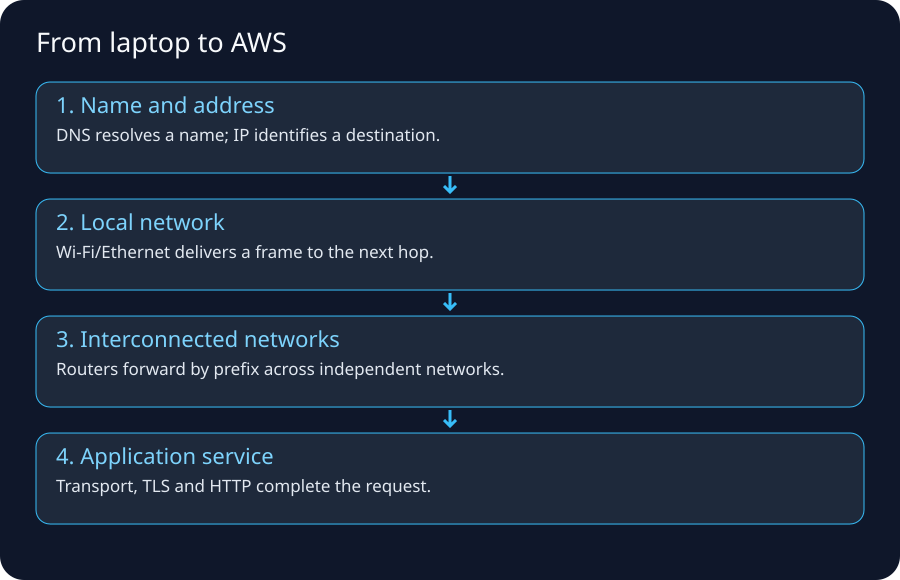
If networking feels mysterious, do not begin with VPC route tables. Begin with one question:
When I type
https://example.comon my laptop or phone, what physical and logical systems touch my traffic before the page appears?
AWS networking is mostly the same networking ideas exposed as software-defined resources. The names change; the packet still needs an address, a next hop, a permitted path, a transport session, and an application endpoint.
The seven questions to ask for every network problem
- Name: What hostname did the client use, and what IP did DNS return?
- Address: What source and destination IPs exist at this point in the path? Were they translated?
- Local link: How does the device reach the next-hop router on this LAN/WLAN/cellular access network?
- Route: Which routing table chooses the next hop for the destination prefix?
- Policy: Which firewall/security policy can allow or deny the flow?
- Transport: Which protocol and ports are used? Did TCP/QUIC establish a session?
- Application: Did TLS and HTTP/application behavior succeed after the network path worked?
Memory trick
N-A-L-R-P-T-A = Name, Address, Link, Route, Policy, Transport, Application.
If you debug in that order, you avoid the common mistake of changing firewall rules when the real problem is DNS, routing, or an application that is not listening.
Recommended study order
| Order | Lecture | Why it comes here |
|---|---|---|
| 1 | Layers, Frames, Packets, Ports & Encapsulation | Learn the vocabulary that all later diagrams use. |
| 2 | Your PC on Wi‑Fi → the Internet | Builds the complete path from a familiar device. |
| 3 | Phone on Mobile Data → the Internet | Shows why cellular access differs from Wi‑Fi while IP remains the common layer. |
| 4 | IP Addressing, Subnetting, NAT & CGNAT | Explains private/public addresses and why NAT exists. |
| 5 | Routing, ISPs, Autonomous Systems, BGP, Peering & Transit | Explains how packets cross independent networks. |
| 6 | DNS → TCP/QUIC → TLS → HTTP | Reconstructs a browser request in time order. |
| 7 | Ingress, Egress, Firewalls, WAF, Proxies & DMZs | Explains security controls at different layers. |
| 8 | Legacy/In-house Data Center Network Flow | Gives the exact mental bridge to enterprise networking. |
| 9 | AWS Internet & VPC Packet Flow | Maps every legacy component to AWS. |
| 10 | Network Troubleshooting Labs | Teaches how to prove which layer is broken. |
| 11 | Networking Cheat Sheet & Interview Questions | Revision and recall. |
One diagram to remember before anything else
Application wants: https://shop.example.com/orders
|
v
DNS resolves name
|
v
destination IP: 198.51.100.20
|
v
local routing table decides:
remote network -> default gateway
|
v
Laptop --Wi-Fi--> home router --ISP--> Internet routers
|
v
destination edge/firewall/LB
|
v
application server
The important idea is that your laptop usually does not know the complete Internet path. It knows the destination IP and a local route, often a default route. Each router independently performs a similar next-hop decision.
What “the Internet” actually means
The Internet is a network of networks, not one giant LAN. Large networks are organized into independently administered routing domains called Autonomous Systems (ASes). ISPs, cloud providers, CDNs, universities, and large enterprises may operate ASes. BGP is the principal protocol used to exchange reachable IP prefixes and routing policy between ASes.
Do not memorize “BGP finds the shortest path.” That is an oversimplification. BGP is policy-driven; AS-path length is only one attribute among several, and commercial or engineering policy can make a longer-looking route preferable.
How AWS fits into this picture
| Familiar network idea | Legacy/home example | AWS expression |
|---|---|---|
| Address range | Office subnet 10.20.30.0/24 |
VPC/subnet CIDR |
| Routing table | Router/default gateway routes | VPC route table |
| Internet edge | ISP-facing router/firewall | Internet Gateway + public routing |
| Outbound address translation | Firewall/router PAT | NAT Gateway for private IPv4 egress |
| Stateful workload firewall | Host or perimeter firewall | Security Group |
| Stateless subnet ACL | Router ACL | Network ACL |
| Layer-7 web firewall | Appliance WAF/reverse proxy | AWS WAF |
| Deep packet/IPS firewall | Palo Alto/Fortinet/etc. | AWS Network Firewall / appliances via GWLB |
| DNS | Corporate DNS / public DNS | Route 53 + VPC Resolver |
| Load balancer | F5/HAProxy/NGINX appliance | ALB/NLB |
| Hub router | Core/WAN router | Transit Gateway |
| Private carrier circuit | MPLS/private line | Direct Connect |
| Site-to-site encrypted tunnel | IPsec VPN appliance | AWS Site-to-Site VPN |
The three traffic directions you should recognize
North–south
Traffic crosses the environment boundary.
Internet user -> enterprise/AWS application
application -> Internet SaaS/API
East–west
Traffic stays inside the environment but crosses workloads/segments.
web tier -> app tier -> database
service A -> service B
VPC A -> VPC B
Management/control-plane traffic
Administrators or automation configure resources; this is not always the same path as application data.
Engineer -> AWS API/control plane
Application packet -> VPC data path
This distinction matters because a console/API action can succeed while the packet path is broken, or the packet path can work while IAM prevents you from changing it.
Beginner mistakes this bootcamp will remove
- Thinking a public subnet is public because of its name.
- Thinking a public IP is physically configured on every NIC exactly as shown in the console.
- Thinking DNS sends your web request to the server.
- Thinking the destination MAC address of an Internet packet is the remote server’s MAC.
- Thinking routers forward based on TCP port instead of destination IP prefixes.
- Thinking NAT is the same thing as a firewall.
- Thinking “ingress” always means public Internet traffic.
- Thinking all firewalls work at the same network layer.
- Thinking Security Groups and NACLs behave identically.
- Thinking an outbound HTTPS request requires inbound port 443 to be open on the client.
- Thinking
pingproves an HTTPS application is healthy. - Thinking
traceroutealways reveals every router.
Internet examples and authoritative reading
- Cloudflare, How does the Internet work?: https://www.cloudflare.com/learning/network-layer/how-does-the-internet-work/
- Cloudflare, What is a router?: https://www.cloudflare.com/learning/network-layer/what-is-a-router/
- Cloudflare, What is BGP?: https://www.cloudflare.com/learning/security/glossary/what-is-bgp/
- Cloudflare, What is DNS?: https://www.cloudflare.com/learning/dns/what-is-dns/
- AWS, Amazon VPC User Guide: https://docs.aws.amazon.com/vpc/latest/userguide/what-is-amazon-vpc.html
Teaching note: external diagrams are linked as references. The diagrams packaged in this course are original study redraws so they remain readable, printable, and consistent with the rest of the guide.
Self-test before moving on
You are ready for the next lecture if you can explain, without AWS terminology:
- Why a laptop needs a default gateway.
- Why the destination MAC on the first Wi‑Fi frame is normally the gateway/AP-side next hop rather than the remote website.
- Why DNS and routing solve different problems.
- Why a private IPv4 address can access the Internet through NAT.
- Why a return packet may take a different physical/router path on the Internet.
Next → Layers, Frames, Packets, Ports & Encapsulation
Layers, Frames, Packets, Ports & Encapsulation
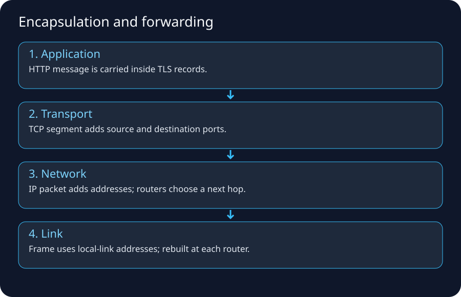
1. Why layers exist
Networking is easier when each part has a narrow responsibility. Your browser should not need to know how Wi‑Fi retransmits a radio frame; your Wi‑Fi adapter should not need to understand HTTP cookies; a core Internet router should not need to parse your HTML.
The practical TCP/IP model can be remembered as:
Application HTTP, DNS, SSH, database protocol
Transport TCP, UDP, QUIC behavior
Internet IP, ICMP, routing between networks
Link Ethernet, Wi-Fi, local frame delivery
Physical copper, fiber, radio
The seven-layer OSI model is useful vocabulary, but real systems often blur boundaries. Use it to locate responsibility, not to force every protocol into a perfect box.
2. Four identifiers people confuse
Suppose your laptop opens HTTPS to 198.51.100.20.
| Identifier | Example | Scope | Main purpose |
|---|---|---|---|
| MAC/link address | 8c:85:90:aa:bb:cc |
Local link | Deliver a frame to the next interface on the LAN/WLAN |
| IP address | 192.168.1.25 → 198.51.100.20 |
Across routed networks | Identify source/destination IP endpoints |
| Port | 51514 → 443 |
Host/transport | Identify a transport endpoint/application socket |
| DNS name | shop.example.com |
Naming system | Human/service name that resolves to records such as IPs |
Memory trick
MAC = next device, IP = remote endpoint/network, port = process, DNS = name.
That statement is simplified but extremely useful.
3. Encapsulation: one request becomes several wrappers
Imagine the browser creates:
GET /orders HTTP/1.1
Host: shop.example.com
A simplified outbound stack is:
HTTP data
↓ encrypted/secured by TLS
TLS records
↓ carried by TCP
TCP segment
src port 51514
dst port 443
↓ carried by IP
IP packet
src 192.168.1.25
dst 198.51.100.20
↓ carried on the local Wi-Fi link
802.11 frame
src MAC = laptop Wi-Fi adapter
dst MAC = local next hop/AP/gateway side
↓
radio symbols/bits
At the destination, the wrappers are processed in the opposite direction until the web server/application receives the request.
4. What changes at a router?
This is a critical interview and troubleshooting concept.
A normal Layer-3 router forwards the IP packet between links. The local-link frame is not carried unchanged from your laptop to the remote server.
Simplified router behavior:
- Receive an Ethernet/Wi‑Fi frame addressed to one of its local interfaces.
- Remove the link-layer header/trailer.
- Inspect destination IP.
- Decrease IPv4 TTL or IPv6 Hop Limit.
- Find the best matching route for the destination.
- Resolve/know the next-hop link-layer address on the outgoing interface.
- Encapsulate the IP packet inside a new link-layer frame.
- Transmit toward the next hop.
Therefore:
Laptop -> Router A -> Router B -> Server
IP destination may remain: 198.51.100.20
MAC destination changes: every Layer-2 segment/hop
NAT is a special case because it can also rewrite IP addresses/ports.
5. Switch versus router
Switch
A Layer-2 switch typically forwards frames inside a broadcast domain/VLAN using MAC address learning.
Host A ---+
+--- Switch --- Host B
Host C ---+
It learns which MAC addresses are reachable through which ports.
Router
A router connects IP networks/subnets.
10.0.1.0/24 --- Router --- 10.0.2.0/24
Hosts on 10.0.1.0/24 send remote-subnet traffic to a router/default gateway.
Layer-3 switch
Enterprise switches can also perform routing. Do not infer capability merely from the physical shape of the appliance.
6. How the host knows whether a destination is local
Example host:
IP address: 192.168.1.25
Subnet prefix: /24
Default gateway: 192.168.1.1
For destination 192.168.1.77, the host can determine that the destination belongs to the same /24 and attempt local delivery.
For destination 198.51.100.20, the destination is outside the local prefix, so a typical route table says:
192.168.1.0/24 -> directly connected
0.0.0.0/0 -> 192.168.1.1
That 0.0.0.0/0 is the default route: the catch-all route when no more specific route matches.
7. ARP and IPv6 Neighbor Discovery
With IPv4, a host often uses ARP to learn the MAC address associated with a local IPv4 next hop.
Example intent:
Laptop: “Who has 192.168.1.1? I need its MAC so I can send this frame.”
Router: “192.168.1.1 is at aa:bb:cc:dd:ee:ff.”
The laptop does not ARP for a remote website IP that is outside its subnet. It ARPs for the local next hop (often the default gateway).
IPv6 uses Neighbor Discovery rather than ARP.
8. TCP and UDP in one page
TCP
TCP provides a reliable byte stream with connection state, sequencing, acknowledgements, retransmission, flow control, and congestion-control mechanisms.
Common protocols: HTTPS over TCP, SSH, many databases.
A classic TCP connection starts:
Client Server
| ---- SYN ----------> |
| <--- SYN + ACK ----- |
| ---- ACK ----------> |
| connected |
UDP
UDP is message/datagram-oriented and does not itself provide TCP-style connection establishment/reliability.
Common uses include DNS transport, voice/video mechanisms, gaming, and QUIC.
QUIC / HTTP/3
Modern HTTP/3 uses QUIC over UDP and integrates transport/security behavior differently from classic HTTP over TCP + TLS. The important beginner lesson is: UDP does not imply “unreliable application.” Reliability can be implemented above UDP, as QUIC does.
9. Ports and sockets
A server process listens on a transport endpoint, for example TCP port 443.
The client usually chooses an ephemeral source port:
192.168.1.25:51514 ---> 198.51.100.20:443
The 5-tuple commonly used to distinguish a flow is:
source IP
source port
destination IP
destination port
protocol
This is why thousands of clients can all connect to the same server port 443 while remaining distinct flows.
10. MTU, fragmentation and the “small ping works, app fails” problem
Link MTU is the largest IP packet a particular link can carry without link-layer fragmentation. Path MTU (PMTU) is the smallest link MTU across the complete source-to-destination path. The sender has to respect the PMTU even when its own interface supports something larger.
host A -- MTU 1500 -- router -- tunnel MTU 1420 -- router -- MTU 1500 -- host B
^
path bottleneck
PMTU(A,B) = min(1500, 1420, 1500) = 1420 bytes
Why tunnels change the number: an outer IP, VPN, GRE or other encapsulation header consumes bytes on the physical link. A 1,500-byte inner packet plus tunnel headers may no longer fit into a 1,500-byte outer frame.
MTU, MSS and application data are different sizes
For a basic IPv4 TCP packet with no IP/TCP options:
interface MTU = 1500 bytes
IPv4 header = 20 bytes
TCP header = 20 bytes
TCP MSS = 1460 bytes of TCP payload
MSS is a TCP payload limit advertised during the handshake; it is not the same field as MTU. TLS and HTTP headers consume additional space inside the TCP byte stream. With IPv6's 40-byte base header, the comparable TCP payload under a 1,500-byte MTU is normally 1,440 bytes before extension headers.
What happens to an oversized packet
| Case | Network behavior | Feedback to sender |
|---|---|---|
| IPv4, DF bit clear | A router may fragment; the destination reassembles | Fragments arrive, but fragmentation is operationally fragile |
| IPv4, DF bit set | The constrained device drops the packet | ICMP Destination Unreachable, fragmentation needed — Type 3, Code 4 |
| IPv6 | Routers do not fragment in transit; the constrained device drops it | ICMPv6 Packet Too Big — Type 2; only the source may create IPv6 fragments |
Path MTU Discovery (PMTUD) uses that feedback to lower the sender's packet size. Blocking the required ICMP error messages can create a PMTU black hole: the TCP handshake and small requests succeed, but larger packets are repeatedly dropped.
Detailed black-hole dry run
Assume the sender's interface MTU is 1,500, a VPN reduces the PMTU to 1,420, and IPv4 packets carry DF:
| Step | Packet/event | Result |
|---|---|---|
| 1 | TCP SYN, about 60 bytes | Fits; VPN forwards it |
| 2 | SYN-ACK and ACK | Fit; connection becomes established |
| 3 | Small HTTP request | Fits; server receives it |
| 4 | Server sends a 1,500-byte IP packet | VPN cannot carry it and drops it |
| 5 | VPN sends ICMP Type 3/Code 4 with usable MTU | If delivered, server lowers its PMTU estimate and retransmits smaller packets |
| 6 | A NACL/firewall drops that ICMP message | Server keeps retransmitting oversized packets; user sees a stall or timeout |
This explains the apparently contradictory symptom “port 443 connects, but the page or file transfer hangs.” A successful handshake proves that small packets can cross; it does not prove every packet size can cross.
Four concrete examples
- A 64-byte
pingsucceeds, but a Linux IPv4 probe whose total IP size is 1,500 fails across a 1,420-byte VPN path. - An SSH login works, yet
scpstalls when bulk transfer begins because larger segments expose the PMTU problem. - An HTTPS health check returns a tiny
200 OK, but a large certificate chain or response times out. - Two EC2 instances communicate inside one high-MTU path, while the same payload fails after adding an internet, VPN or inspection hop with a smaller MTU.
AWS-specific invariant
When VPC hosts have different effective MTUs or communicate through external paths, PMTUD control traffic must be able to return. AWS documents the relevant NACL permissions in both directions: IPv4 fragmentation-needed (ICMP Type 3, Code 4) and IPv6 Packet Too Big (ICMPv6 Type 2). A route and an allowed TCP port are not sufficient if the PMTUD feedback itself is discarded.
Do not assume every AWS hop has the same MTU. EC2 instance types, Transit Gateway, VPN, Direct Connect, load balancers, appliances and the public internet can place different limits on a path. The PMTU is still the minimum across the actual route.
Troubleshooting sequence
- Prove DNS, routes, Security Groups/NACLs and the listening port first; MTU should not be the first guess for every timeout.
- Compare tiny traffic with a transfer large enough to fill multiple packets.
- On Linux,
tracepath destinationcan expose an observed PMTU. A controlled IPv4 probe such asping -M do -s 1472 destinationrequests a 1,500-byte IP packet (1,472 payload + 8-byte ICMP + 20-byte IPv4 header); reduce the payload until it succeeds. - Capture traffic at the sender. Repeated retransmissions after large packets, without the expected ICMP error, are stronger evidence than one failed ping.
- Inspect tunnel/inspection overhead and both directions of NACL/firewall policy. Do not “fix” the symptom by randomly shrinking every interface before identifying the narrow hop.
Invariant and common mistakes
Every emitted IP packet must be no larger than the sender's current PMTU estimate; a smaller-MTU hop must either provide usable feedback or the sender needs a conservative fallback.
Common mistakes:
- equating MTU with TCP MSS,
- testing only default-size
ping, - blocking all ICMP because it is mistaken for Echo only,
- assuming IPv6 routers fragment oversized packets,
- counting tunnel headers as application payload,
- changing MTU globally without proving where the bottleneck is.
11. ICMP is not “the ping protocol only”
ICMP supports network control/error messages. ping commonly uses ICMP Echo, but ICMP is also involved in operational behavior such as reporting unreachable destinations and supporting path diagnostics. Blocking all ICMP can create subtle operational problems.
12. Layer-oriented debugging
| Symptom | Likely area to check first |
|---|---|
| Wi‑Fi shows disconnected | physical/link/access |
| Has Wi‑Fi but no IP | DHCP/address configuration |
| Can reach local gateway but not Internet | routing/NAT/ISP |
| Can reach IP but hostname fails | DNS |
| TCP connection refused | destination reachable, no listener or active reject |
| TCP timeout | path/policy/drop/congestion possible |
| TLS certificate error | TLS/name/certificate/time issue |
| HTTP 403 | application/WAF/authz rather than basic routing |
| HTTP 500 | application/server dependency |
13. Legacy data-center connection
In a legacy enterprise, teams often divided ownership like this:
Server team host OS, NIC, TCP listener
Network team VLAN, switch, route, BGP/OSPF
Firewall team access policy/NAT/inspection
DNS team zones/resolvers
Load balancer team VIP/pools/certificates
Application team HTTP/API behavior
A ticket might bounce among five teams because each owns a different layer. AWS collapses some appliances into services, but the logical boundaries remain.
14. AWS bridge
When you later see:
EC2 ENI -> subnet -> route table -> NAT gateway -> IGW
translate it mentally to:
host interface -> local routed segment -> next-hop decision
-> address translation edge -> Internet routing edge
Security Groups are not “AWS magic”; they are a stateful packet/flow permission boundary associated with supported interfaces/resources. NACLs are a different, stateless subnet-level control.
15. Hands-on lab on your own computer
Run equivalents appropriate for your OS:
# Linux/macOS examples
ip addr # or ifconfig
ip route # route table
arp -a
nslookup example.com
# or dig example.com
traceroute example.com
curl -v https://example.com/
Windows equivalents include:
ipconfig /all
route print
arp -a
nslookup example.com
tracert example.com
curl.exe -v https://example.com/
Record:
- your private IP,
- prefix/netmask,
- default gateway,
- DNS resolver,
- resolved destination IP,
- first few route hops.
Do not be surprised if some traceroute hops show *; networks can filter or deprioritize the diagnostic messages while forwarding normal traffic.
16. Memory card
Name DNS
Process Port
Remote host IP
Local hop MAC/link address
Next hop Route table
Permission Firewall/policy
Proof packet capture/log/flow evidence
17. Internet lecture trail
- Cloudflare, Network layer: https://www.cloudflare.com/learning/network-layer/what-is-the-network-layer/
- Cloudflare, Router: https://www.cloudflare.com/learning/network-layer/what-is-a-router/
- Cloudflare, Internet overview: https://www.cloudflare.com/learning/network-layer/how-does-the-internet-work/
- AWS, Path MTU Discovery and network ACLs: https://docs.aws.amazon.com/vpc/latest/userguide/path_mtu_discovery.html
- RFC 8200, IPv6 specification: https://www.rfc-editor.org/rfc/rfc8200
- RFC 8201, IPv6 Path MTU Discovery: https://www.rfc-editor.org/rfc/rfc8201
Your PC on Wi‑Fi → the Internet: Complete Packet Walk
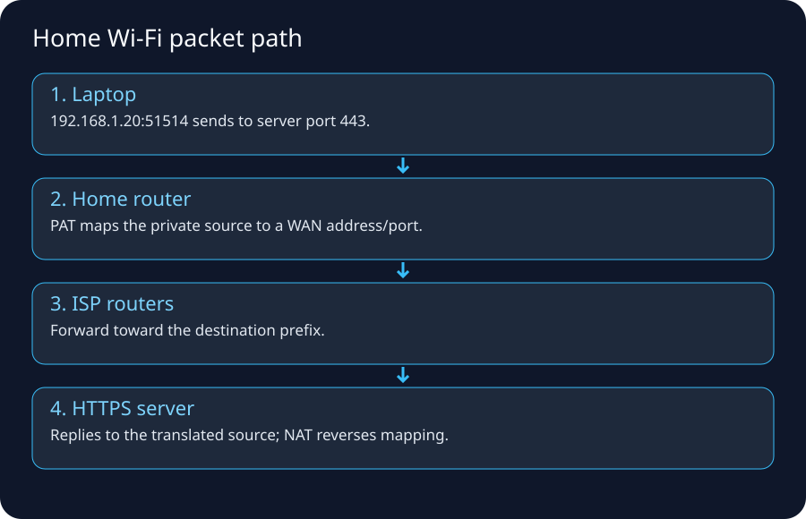
1. The scenario
You are at home. Your laptop is connected to Wi‑Fi. You type:
https://shop.example.com/products/42
Assume this simplified state:
Laptop Wi-Fi IP: 192.168.1.25/24
Default gateway: 192.168.1.1
DNS resolver: 192.168.1.1 (router forwards to ISP/public resolver)
Router WAN address: 100.64.18.22 (example CGNAT/shared address)
ISP public NAT addr: 203.0.113.9 (documentation example)
Website IP: 198.51.100.20 (documentation example)
Destination TCP port: 443
The specific addresses are examples. 192.168.0.0/16 is private space; 100.64.0.0/10 is shared address space reserved for service-provider CGNAT use.
2. Before the browser can send anything: Wi‑Fi association
Wi‑Fi is the local access/link technology. The laptop discovers an SSID, authenticates/associates according to the network's security mode, and establishes link-layer connectivity to the access point.
Home equipment often combines several logical functions in one plastic box:
Wi-Fi access point
Ethernet switch
IP router/default gateway
DHCP server
DNS forwarder/cache
NAT/PAT
stateful firewall
sometimes modem/ONT function
That is why beginners call everything “the router.” In enterprise networks these functions may be separate devices/services.
3. DHCP: how the laptop learns basic network configuration
A typical home client learns configuration automatically using DHCP. Conceptually it receives:
- an IP address such as
192.168.1.25, - a subnet prefix/netmask such as
/24, - a default gateway such as
192.168.1.1, - one or more DNS resolver addresses,
- lease timing and other options.
Without a default gateway, the laptop can still communicate with local neighbors if addressing is correct, but it normally has no route to arbitrary remote networks.
Failure example
Laptop IP: 169.254.x.x
On many systems, an IPv4 link-local/self-assigned address can indicate that DHCP did not provide normal configuration. You may have Wi‑Fi radio association but still lack usable routed connectivity.
4. DNS: turn the hostname into an IP
The browser/OS needs an address for shop.example.com.
The full public DNS hierarchy may involve:
client/stub resolver
↓
recursive resolver
↓
root DNS
↓ referral
TLD (.com) DNS
↓ referral
authoritative DNS for example.com
↓
A/AAAA/CNAME/etc. answer
Caching means this full chain does not happen for every request.
The result might be:
shop.example.com -> 198.51.100.20
DNS has now solved the name problem. It has not sent your HTTPS request.
5. The laptop decides: local destination or remote destination?
The laptop compares the destination with its local routes.
192.168.1.0/24 -> directly connected Wi-Fi
0.0.0.0/0 -> 192.168.1.1
198.51.100.20 is not in 192.168.1.0/24, so the default route wins.
The next hop is 192.168.1.1.
6. ARP: discover the gateway's local MAC address
To send a Wi‑Fi/Ethernet-layer frame toward 192.168.1.1, the laptop needs local-link addressing. With IPv4, it may use ARP to learn the gateway's MAC address.
Critical point:
The laptop does not need the website server's MAC address. MAC addresses are local-link identifiers. The first frame targets the local next hop.
7. TCP connection to HTTPS
The laptop chooses an ephemeral source port, for example 51514, and initiates TCP:
192.168.1.25:51514 -> 198.51.100.20:443
Simplified handshake:
Laptop Website
SYN ------------------------->
<---------------- SYN/ACK
ACK ------------------------->
If this never completes, TLS and HTTP have not started yet.
8. NAT/PAT at the home router
Private IPv4 192.168.1.25 is not globally routed on the public Internet. The home router usually translates the flow.
Before translation:
src 192.168.1.25:51514
dst 198.51.100.20:443
Possible mapping:
192.168.1.25:51514 <-> router/external-address:62001
Port Address Translation lets multiple inside hosts share one external IPv4 address by assigning distinct translated ports/state.
A NAT table conceptually remembers:
inside-local outside
192.168.1.25:51514 -> translated-address:62001
192.168.1.31:53100 -> translated-address:62002
Return packets matching established translations can be mapped back to the correct internal host.
NAT is not exactly a firewall
NAT changes addresses/ports. A stateful firewall enforces connection policy. Consumer devices often combine both, which is why the concepts get conflated.
9. The modem/ONT and ISP access network
Depending on your service, the physical/access path may be:
Fiber: laptop -> Wi-Fi router -> ONT -> ISP optical access network
Cable: laptop -> Wi-Fi router -> cable modem -> HFC/CMTS/CCAP network
DSL: laptop -> Wi-Fi router -> DSL modem -> copper access/DSLAM
Fixed wireless: router/CPE -> radio access -> provider aggregation
The home LAN frame format does not necessarily remain the same through the access provider. The provider carries IP traffic over its own access and transport technologies.
10. CGNAT: why “what is my IP?” can differ from your router WAN IP
IPv4 scarcity caused many providers to deploy Carrier-Grade NAT (CGNAT). RFC 6598 reserved 100.64.0.0/10 as Shared Address Space for provider networks.
You can therefore have two levels of translation:
Laptop 192.168.1.25
↓ home NAT
Router WAN 100.64.18.22
↓ ISP CGNAT
Shared public IPv4 203.0.113.9
↓ Internet
This helps explain why inbound port forwarding can be difficult or impossible when the provider owns the outer NAT mapping.
11. ISP routers and the wider Internet
Your ISP has many routers. Inside one provider, traffic may be forwarded using internal routing protocols and MPLS/SR or other transport technologies. At boundaries between independent networks, BGP exchanges prefix reachability and policy.
Your packet may traverse:
ISP access router
-> regional aggregation
-> provider core
-> peering/transit edge
-> another autonomous system
-> destination network edge
The exact path can change because of routing policy, failures, congestion engineering, peering changes, or CDN placement.
12. Peering, transit and Internet exchanges
Peering
Two networks exchange traffic directly according to an agreement/policy.
Transit
One network pays another network to provide reachability to wider parts of the Internet.
IXP
An Internet Exchange Point provides shared infrastructure where many networks can interconnect and peer.
These commercial/engineering relationships help explain why the “geographically shortest” path is not always selected.
13. Arrival at the destination network
The IP prefix containing 198.51.100.20 is routed toward the destination operator. The first system that actually handles the application may be a CDN/edge proxy, DDoS protection layer, WAF, reverse proxy, or load balancer rather than the origin server.
Modern website path:
Browser
-> ISP
-> Internet
-> CDN edge
-> WAF/security
-> load balancer/reverse proxy
-> app service
-> database/cache
14. TLS starts after transport connectivity exists
Once the connection is available, TLS authenticates the server (normally via its certificate chain and hostname validation), negotiates cryptographic parameters, and derives session keys.
A certificate error tells you something useful: you reached enough of the destination path to perform TLS. This is different from a DNS failure or TCP timeout.
15. HTTP request and response
Only after the required DNS/routing/transport/security setup can the application exchange HTTP semantics:
GET /products/42 HTTP/1.1
Host: shop.example.com
...
The response may trigger many more requests for CSS, JavaScript, images, fonts, APIs, analytics, ads, and other resources. A “single webpage load” can therefore create many connections/streams and DNS lookups.
16. Return traffic: reverse direction is related but not guaranteed identical
The server's response is routed toward the source public address. The Internet can use asymmetric routing: the return path need not traverse the exact same routers.
At the ISP CGNAT and home NAT boundaries, state maps the return traffic back:
198.51.100.20:443 -> 203.0.113.9:translated-port
-> 100.64.18.22:translated-port
-> 192.168.1.25:51514
The home router then emits a local Wi‑Fi frame to the laptop.
17. What is ingress and egress here?
The words are always relative to a boundary.
From your home LAN:
Laptop -> Internet = egress
Internet -> Laptop = ingress
From the website's data center:
Laptop request -> website = ingress
Website response/request to external API = egress
Never use “ingress” without mentally asking: ingress into what?
18. A packet snapshot at key boundaries
Assume a single-NAT case for simplicity.
On laptop LAN before NAT
L2 src MAC: laptop
L2 dst MAC: home gateway
IP src: 192.168.1.25
IP dst: 198.51.100.20
TCP src: 51514
TCP dst: 443
On public Internet after NAT
L2 addresses: change per link
IP src: 203.0.113.9
IP dst: 198.51.100.20
TCP src: 62001
TCP dst: 443
On return Internet traffic
IP src: 198.51.100.20
IP dst: 203.0.113.9
TCP src: 443
TCP dst: 62001
Back on LAN after NAT reversal
IP src: 198.51.100.20
IP dst: 192.168.1.25
TCP src: 443
TCP dst: 51514
19. “Internet works on phone but not laptop” troubleshooting
Work down a proof tree:
1. Is laptop associated to Wi-Fi?
2. Did laptop receive IP/prefix/gateway/DNS?
3. Can it reach the gateway?
4. Can it reach a known IP?
5. Can it resolve DNS?
6. Can it open TCP/443?
7. Does TLS validate?
8. Does HTTP return a useful status?
If another Wi‑Fi device works, the WAN/ISP path is less likely to be the root cause, though not impossible because device-specific policy/DNS/IPv6 can differ.
20. Legacy-to-AWS analogy
| Home/ISP concept | AWS analogue |
|---|---|
| private laptop IP | EC2/task private IP |
| home LAN subnet | VPC subnet |
| local routing/default route | subnet route table |
| home NAT | NAT Gateway for private IPv4 egress |
| ISP Internet edge | Internet Gateway + AWS edge/global network |
| home firewall | Security Groups/NACLs/Network Firewall depending layer/scope |
| DNS resolver | VPC Resolver / Route 53 |
Do not force the analogy too literally; AWS implements these functions as distributed cloud primitives rather than one home-router box.
21. Best Internet examples
- Cloudflare, How does the Internet work?: https://www.cloudflare.com/learning/network-layer/how-does-the-internet-work/
- RFC 1918 private IPv4: https://www.rfc-editor.org/rfc/rfc1918
- RFC 6598 CGNAT Shared Address Space: https://www.rfc-editor.org/rfc/rfc6598
- Cloudflare, What is a router?: https://www.cloudflare.com/learning/network-layer/what-is-a-router/
22. What you must remember
- Wi‑Fi gets you onto the local link; it is not “the Internet.”
- DHCP commonly gives your host IP, prefix, gateway, and DNS settings.
- DNS returns addressing information; routing moves packets.
- Remote traffic is normally sent to the default gateway.
- NAT can rewrite private source addressing to an Internet-routable address.
- Your ISP may perform a second CGNAT layer.
- BGP connects independently operated networks; it is policy-driven.
- TLS/HTTP are later stages—do not troubleshoot them before proving basic reachability.
Phone on Mobile Data → the Internet: 4G/5G Mental Model
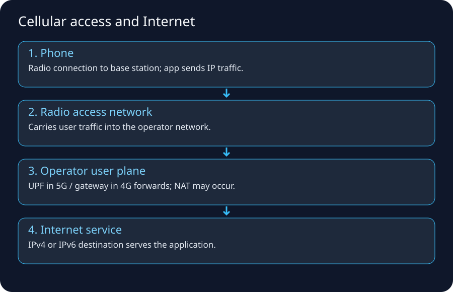
1. Why mobile data deserves its own flow
When your phone leaves Wi‑Fi and uses cellular data, the application still speaks IP to remote services, but the access network and subscriber/session machinery are different.
A useful simplified path is:
App on phone
↓
IP stack on phone
↓
4G/5G radio access
↓
cell site / base station
↓
mobile transport/backhaul
↓
mobile packet core
↓
operator policy + address translation / Internet edge
↓
peering/transit
↓
website/cloud/CDN
This is deliberately simplified. Mobile cores contain many control-plane functions, policy/QoS functions, subscriber databases, and user-plane anchors.
2. Two planes: control plane vs user plane
This distinction is the key to understanding cellular networks.
Control plane
Handles things such as:
- authentication/subscriber identity,
- mobility and registration,
- session establishment,
- policy/QoS decisions,
- selecting user-plane functions,
- signaling during handover.
User plane
Carries the actual application packets after connectivity is established.
Control plane: “Who is this subscriber and how should the session work?”
User plane: “Carry these IP packets to/from the data network.”
In 5G terminology, the UPF (User Plane Function) is a major user-plane component that forwards UE traffic between the radio access side and Data Networks such as the Internet. GSMA descriptions of 5G connectivity model a PDU session as the connectivity abstraction between applications on the UE and a Data Network.
3. Terms you should recognize
| Term | Meaning at beginner level |
|---|---|
| UE | User Equipment: phone/modem/device |
| RAN | Radio Access Network |
| eNodeB | 4G/LTE base station term |
| gNB | 5G NR base station term |
| EPC | 4G Evolved Packet Core |
| 5GC | 5G Core |
| UPF | 5G user-plane forwarding/anchor function |
| PGW | 4G packet data network gateway function |
| APN | 4G-style access point/profile concept for data services |
| DNN | 5G Data Network Name; selects/identifies data-network connectivity context |
| PDU session | 5G connectivity session between UE and a data network |
You do not need to memorize every 3GPP interface to understand AWS networking. Learn the packet path and plane separation first.
4. Step 1 — the phone attaches/registers with the mobile network
Unlike home Wi‑Fi, cellular access is tightly integrated with operator subscriber identity and mobility.
Conceptually:
- Phone discovers suitable radio service.
- SIM/eSIM-based subscriber credentials participate in authentication.
- Network establishes control-plane context.
- The device requests packet-data connectivity.
- Policy/session functions select how user traffic should be carried.
- A user-plane path is established toward a Data Network such as the Internet.
The exact procedures differ by generation and deployment mode. The learning objective is not protocol-message memorization; it is to understand that IP packets ride on top of a managed mobile session.
5. Step 2 — the phone gets IP connectivity
The carrier provides addressing/session information. Depending on the network and device, the phone may receive IPv4, IPv6, or dual-stack connectivity.
For IPv4, carriers commonly use address sharing/NAT because public IPv4 space is scarce. The address shown inside the phone may not be the public address seen by an Internet website.
Possible simplified path:
Phone IP
↓
mobile core user-plane tunnel
↓
carrier NAT/CGNAT
↓
public Internet address
IPv6 changes the addressing model because globally unique IPv6 addresses do not require IPv4-style NAT merely to conserve addresses, although firewall/policy controls are still needed.
6. Step 3 — radio traffic reaches the base station
Your IP packet is carried over radio protocols to the serving cell/base station. Radio conditions affect:
- latency,
- retransmissions,
- throughput,
- handover behavior,
- packet loss/jitter under congestion,
- power usage.
A full cellular stack is far more complex than “Wi‑Fi but farther.” Spectrum scheduling, mobility, QoS, and operator core behavior all participate.
7. Step 4 — transport/backhaul moves traffic into the packet core
Cell sites connect into provider transport networks using fiber, microwave, Ethernet/IP/MPLS, segment routing, or other carrier technologies. The provider must carry both control signaling and user traffic reliably across its network.
This middle network is largely invisible to the app. Your phone does not have a routing table entry for every cell-site/core router.
8. Step 5 — packet core forwards toward the Data Network
In 5G, user traffic is carried through the user-plane architecture to a UPF. A UPF can be placed centrally or closer to the edge depending on latency/service design.
Conceptual user-plane flow:
UE
-> gNB
-> user-plane tunnel
-> UPF
-> Data Network (Internet/private enterprise network/edge application)
GSMA material describes the UPF as forwarding UE traffic between access networks such as 5G gNBs and Data Networks, with QoS enforcement under session-control policy.
9. Why carriers use multiple UPFs / local breakout
If every packet from every city had to travel to one distant national gateway before reaching a nearby app, latency and transport cost could be poor.
A provider can place user-plane functions closer to users or selected services:
Phone in Atlanta
-> local/regional UPF
-> nearby CDN/edge service
instead of:
Phone in Atlanta
-> distant national core anchor
-> back across network
-> nearby destination
This is one reason mobile/edge architectures discuss local breakout.
10. What happens when you visit a website on mobile data
After the cellular session exists, application-layer behavior resembles other IP access methods:
1. DNS lookup
2. destination IP selected
3. route/user-plane forwarding toward Internet
4. TCP handshake or QUIC setup
5. TLS handshake
6. HTTP request
7. response/data packets return through carrier path
The access network changed, but DNS/IP/transport/TLS/HTTP concepts remain reusable.
11. Mobile data vs Wi‑Fi: side-by-side
| Question | Home Wi‑Fi | Mobile data |
|---|---|---|
| First wireless hop | Wi‑Fi AP | cellular base station |
| Subscriber/auth model | local WLAN password/enterprise auth | SIM/eSIM + operator authentication |
| Gateway to wider network | home router/CPE | carrier packet core/user plane |
| Common IPv4 translation | home NAT, possibly ISP CGNAT | carrier CGNAT/NAT common |
| Mobility | usually reconnect/roam among WLAN APs | core/RAN designed for wide-area mobility/handover |
| Policy/QoS | home/enterprise WLAN policies | carrier subscriber/session/QoS policies |
| Internet routing | ISP after CPE | mobile operator Internet edge/peering |
12. Why your public IP changes when switching Wi‑Fi ↔ cellular
You changed access networks and therefore the Internet egress path.
Wi-Fi:
phone -> home NAT -> home ISP -> Internet
Mobile:
phone -> carrier RAN/core -> carrier Internet edge -> Internet
The source public address seen by a website can change. Existing TCP sessions may break because the endpoint path/address changed unless a higher-level protocol/system supports mobility/resumption.
13. Tethering/hotspot: another NAT boundary can appear
When a phone shares mobile data as a hotspot, the phone may act like a small router for connected devices:
Laptop private hotspot IP
-> phone hotspot NAT/routing
-> mobile session
-> carrier NAT (possible)
-> Internet
This can create multiple address-translation layers, similar to home NAT + CGNAT.
14. Enterprise private mobile networking
Mobile networks can connect devices to private enterprise networks rather than the public Internet. With appropriate carrier/private-5G design, the Data Network can be an enterprise environment or edge workload.
That means “mobile data” does not necessarily equal “public Internet.” The packet core can steer traffic according to the service/session design.
15. Troubleshooting mobile data by layer
No cellular service
Check radio coverage, SIM/eSIM state, airplane mode, network registration.
Signal exists but no data
Session/APN/DNN/subscriber provisioning, carrier outage, device IP configuration, policy.
Some apps fail but others work
DNS, IPv4/IPv6 behavior, MTU, app endpoint, carrier filtering, TLS/certificate, service-specific issue.
Works on Wi‑Fi, fails on mobile
Compare:
- resolved DNS answers,
- IPv4 vs IPv6 path,
- source address/geolocation restrictions,
- CGNAT/port behavior,
- MTU/path behavior,
- application WAF/rate-limiting policy.
Works on mobile, fails on Wi‑Fi
Home DNS/router/ISP/firewall is more suspect than the destination application.
16. AWS connection: mobile client hitting an AWS app
A common path can be:
Phone app
-> carrier RAN + packet core
-> carrier Internet edge
-> Internet/peering
-> Route 53-resolved endpoint
-> CloudFront / API Gateway / ALB
-> private application resources
The AWS VPC does not care that the first hop was 5G. By the time traffic arrives at the public AWS endpoint, it is IP traffic with source/destination addressing and transport/application protocol state.
17. Security implication: source IP may represent a shared carrier egress
With carrier NAT, many subscribers can share public IPv4 addresses over time or concurrently through port translation. Therefore:
- source IP is not a strong user identity,
- IP allowlists for consumer/mobile users can be brittle,
- rate limiting solely by source IP can unfairly group users,
- audit systems should use authenticated application identities in addition to network metadata.
18. Real-world mental exercise
Open a public “what is my IP” site on Wi‑Fi, note the address, then disable Wi‑Fi and repeat on cellular. Do not treat the result as sensitive credentials, but notice how the visible Internet egress identity changes.
Then test:
DNS resolver behavior
IPv4 address
IPv6 availability
latency to same site
The goal is not benchmarking; it is observing that the same phone/app can traverse two very different access networks.
19. Internet/reference trail
- GSMA cellular ecosystem material describing 5G connectivity and UPF forwarding: https://www.gsma.com/solutions-and-impact/technologies/internet-of-things/wp-content/uploads/2023/02/ACJA_4_UAS_Cellular_Ecosystem_Whitepaper.pdf
- 3GPP specifications portal: https://portal.3gpp.org/
- Ericsson overview of packet core/user plane: https://www.ericsson.com/en/portfolio/cloud-software-and-services/cloud-core/packet-core/cloud-packet-core/packet-core-gateway
- RFC 6598 CGNAT shared space: https://www.rfc-editor.org/rfc/rfc6598
20. What to remember
Cellular changes the access and session machinery, not the fundamental need for DNS, IP routing, transport, security, and application protocols.
Memory path:
UE -> RAN -> mobile transport -> packet core/UPF -> carrier edge/NAT -> Internet -> service
IP Addressing, Subnetting, NAT, PAT, CGNAT & IPv6
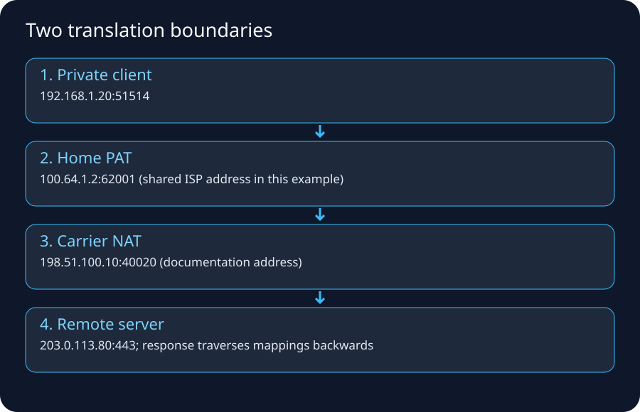
1. The address question
Every routed packet needs source and destination IP addresses. Before learning CIDR math, understand the job:
An IP address identifies an interface/end point in an IP routing context, and the prefix tells routers which block/network it belongs to.
IPv4 is 32 bits. IPv6 is 128 bits.
2. IPv4 dotted decimal is just a human representation
192.168.1.25
is four 8-bit numbers:
192 168 1 25
11000000 10101000 00000001 00011001
Routers perform prefix comparisons in binary. Humans use CIDR notation to describe how many leading bits form the network prefix.
3. CIDR notation
192.168.1.0/24
means the first 24 bits are the prefix.
A /24 contains 256 total IPv4 addresses in the mathematical block. Whether all are assignable depends on platform/network rules. AWS reserves addresses within each subnet, so do not equate mathematical block size with usable AWS host count.
Common sizes:
| Prefix | Total IPv4 addresses | Mental shortcut |
|---|---|---|
| /16 | 65,536 | large VPC/site block |
| /20 | 4,096 | medium block |
| /24 | 256 | classic small LAN-sized block |
| /26 | 64 | quarter of a /24 |
| /27 | 32 | eighth of a /24 |
| /28 | 16 | small block |
| /32 | 1 | single IPv4 address/host route |
Formula:
IPv4 block size = 2^(32 - prefix length)
4. How a host decides “same subnet or router?”
Host:
IP: 10.20.30.25/24
Destination A:
10.20.30.99
Same /24 prefix -> local-link delivery.
Destination B:
10.20.31.99
Different /24 -> use a router according to routing table.
This is why an incorrect subnet mask/prefix can create bizarre connectivity: the host may incorrectly believe a remote IP is local and ARP for it, or incorrectly send a local peer to a router.
5. Private IPv4 ranges (RFC 1918)
The classic private ranges are:
10.0.0.0/8
172.16.0.0/12
192.168.0.0/16
These can be reused by many organizations and are not globally routed as normal public Internet addresses.
The overlap problem
Company A:
10.0.0.0/8
Company B:
10.0.0.0/8
If they later connect networks, overlapping addresses make routing ambiguous. This is a common legacy acquisition/VPN/cloud-migration problem.
AWS VPC IPAM and disciplined enterprise IP planning help reduce this risk, but they do not magically fix existing overlaps.
6. Public IPv4
A public IPv4 address is intended to be globally routable/unique in Internet routing space under the relevant allocation/announcement model.
Do not confuse:
“public IP exists”
with:
“the service is reachable from everyone.”
Reachability also needs routing, firewall/security permission, a listening service, and correct return path.
7. Special documentation ranges used in this guide
To avoid accidentally using real routable addresses in examples, documentation commonly uses ranges such as:
192.0.2.0/24
198.51.100.0/24
203.0.113.0/24
Treat addresses from those blocks in diagrams as examples, not real targets.
8. NAT: what it actually changes
Network Address Translation rewrites address information as packets cross a translation boundary.
The most familiar case is source NAT for outbound IPv4:
Inside packet:
src 10.0.1.25
dst 198.51.100.20
After source NAT:
src 203.0.113.5
dst 198.51.100.20
A translation table preserves enough state to map return traffic.
9. PAT/NAPT: why many private devices share one public IPv4
In common home/enterprise usage, address and port translation is involved.
10.0.1.25:51001 -> 203.0.113.5:62001
10.0.1.26:51001 -> 203.0.113.5:62002
The same public address can represent many simultaneous flows because translated ports distinguish mappings.
AWS documentation explicitly notes that what industry commonly calls NAT devices perform both address and port translation in these scenarios.
10. Static one-to-one NAT vs dynamic/PAT
One-to-one mapping
A public address maps predictably to one inside address. Enterprise firewalls often support static NAT for published servers.
Dynamic source NAT/PAT
Many inside clients share one/few outside addresses for outbound sessions.
Destination NAT / port forwarding
Inbound traffic to a public address/port is translated toward an internal server.
Example:
203.0.113.10:443 -> 10.0.10.50:443
A reverse proxy/load balancer can also publish applications, but that is application/proxying rather than merely packet address translation.
11. NAT is not a security architecture by itself
It is tempting to say “private IP = secure.” That is incomplete.
Security depends on:
- ingress/egress policy,
- stateful firewall behavior,
- application authentication,
- patching,
- segmentation,
- logging/monitoring,
- route exposure,
- identity and data controls.
NAT can incidentally block unsolicited inbound flows if no mapping/publishing exists, but its primary conceptual job is translation.
12. CGNAT: NAT operated by the provider
RFC 6598 defines:
100.64.0.0/10
as Shared Address Space for carrier/service-provider use with CGN.
Possible chain:
Laptop 192.168.1.25
-> home router 100.64.5.10
-> ISP CGN public 203.0.113.20
-> Internet
Problems/implications include:
- harder inbound hosting/port forwarding,
- shared public source addresses,
- need for port/time metadata in abuse investigations,
- application rate limiting by public IP may group unrelated subscribers.
13. AWS public IPv4 is a useful non-obvious example
For EC2, AWS documentation explains that a public IPv4 displayed for an instance is mapped to its primary private IPv4 through NAT. Inside the instance OS, tools such as ip addr/ifconfig show the private address rather than that public IPv4 as a directly configured NIC address.
The Internet Gateway performs one-to-one NAT behavior for instance public IPv4/Elastic IP traffic as part of Internet connectivity.
This is an excellent example of why you should distinguish:
logical/public addressing shown by the cloud control plane
from
address configured on the guest network interface
14. Subnetting exercise: split a /24
Start:
10.0.8.0/24
Split into four equal blocks -> borrow two more prefix bits:
10.0.8.0/26
10.0.8.64/26
10.0.8.128/26
10.0.8.192/26
Each /26 contains 64 mathematical addresses.
Pattern shortcut
For IPv4:
/24 256
/25 128
/26 64
/27 32
/28 16
/29 8
/30 4
/31 2 (special point-to-point use possible)
/32 1
Each extra prefix bit halves the block.
15. VLSM planning example
Need:
App subnet A: ~100 hosts
App subnet B: ~100 hosts
DB subnet A: ~30 hosts
DB subnet B: ~30 hosts
Ops subnet: ~20 hosts
Do not assign arbitrary /24s just because they are easy. Plan growth, AZ duplication, container/pod/ENI consumption, load balancer ENIs, endpoints, and future network connections.
A cloud subnet can run out of IPs before CPU or storage becomes the bottleneck.
16. IPv6: key conceptual differences
IPv6 uses 128-bit addresses and removes the IPv4 address-conservation reason for NAT. That changes the address model, but it does not remove routing or security boundaries.
The five differences to remember
| Concept | IPv4 mental model | IPv6 mental model |
|---|---|---|
| Address width | 32 bits | 128 bits |
| Local neighbor discovery | ARP | Neighbor Discovery over ICMPv6 |
| Broadcast | Broadcast exists | No broadcast; multicast/anycast cover the use cases |
| Router fragmentation | Possible for IPv4 when DF is clear | Routers never fragment; source handles packet sizing/fragmentation |
| Typical AWS internet egress | Private IPv4 + NAT Gateway | Globally unique IPv6 + IGW or egress-only IGW; no address-conservation NAT |
An IPv6 address can be globally unique/public in the addressing sense while still being unreachable from the internet. Actual reachability requires all of these to agree:
workload has IPv6
AND subnet/VPC has IPv6 addressing
AND route table has a matching IPv6 route
AND gateway/path supports IPv6
AND Security Group allows the flow
AND stateless NACL allows request and return traffic
AND the application listens on IPv6
The invariant is:
An address identifies an endpoint; routes choose a path; policies permit the flow. None of the three substitutes for the others.
Address forms you will see
- Global unicast — routable beyond the local link when routing and policy permit it. AWS-provided public IPv6 addresses fit this mental category.
- Link-local (
fe80::/10) — used only on the local link; every IPv6-enabled interface normally has one. - Loopback (
::1) — the local host. - Unspecified (
::) — “no address,” comparable to0.0.0.0in limited contexts. - Multicast (
ff00::/8) — one-to-many groups; Neighbor Discovery uses multicast rather than IPv4-style broadcast ARP.
IPv6 text compresses consecutive zero groups once. For example:
2001:0db8:0000:0000:0000:0000:0000:0025
2001:db8::25
These are the same address. Do not use textual spelling as an identity check without normalizing it.
AWS outbound-only IPv6 packet trace
Assume an instance has 2001:db8:1234:1a00::25, the private-subnet route table contains ::/0 -> eigw-1234, its Security Group allows outbound TCP 443, and the NACL permits request and return traffic.
| Step | State/packet | Important observation |
|---|---|---|
| 1 | DNS returns an AAAA record for the destination | An A record proves only IPv4 naming; test AAAA separately |
| 2 | Source chooses the IPv6 destination and matches ::/0 |
IPv4 0.0.0.0/0 does not match IPv6 traffic |
| 3 | Egress-only IGW forwards the outbound flow | It is stateful and does not translate the source into a shared public address |
| 4 | Internet server replies to the instance's IPv6 address | Return traffic is associated with the initiated flow |
| 5 | Egress-only IGW passes the response back | An unrelated internet host cannot initiate a new inbound flow through it |
AWS describes an egress-only Internet Gateway as horizontally scaled, redundant and stateful. It is IPv6-only. It has no attached Security Group; control workload traffic with the workload Security Group and subnet NACLs.
Public versus outbound-only route patterns
Public dual-stack subnet:
0.0.0.0/0 -> Internet Gateway
::/0 -> Internet Gateway
Private dual-stack subnet:
0.0.0.0/0 -> NAT Gateway
::/0 -> egress-only Internet Gateway
The second pattern is not “IPv6 NAT.” The instance normally keeps its globally unique IPv6 source address; the egress-only gateway supplies a stateful outbound-only boundary.
Four concrete examples
- Address but no route: the instance has IPv6, but the route table lacks
::/0; public IPv6 access fails. - Route but no listener: routing and policy work, but the Java server binds only to
127.0.0.1or an IPv4 socket; IPv6 connection attempts are refused or time out. - IPv4 works, IPv6 fails: DNS returns A and AAAA; clients that prefer AAAA expose a missing IPv6 SG/NACL rule while IPv4-only clients remain healthy.
- Outbound succeeds, unsolicited inbound fails: an instance reaches an external HTTPS service through an egress-only IGW, but an internet scan cannot start a new connection to the instance. That is expected.
IPv6 packet-size rule
IPv6 routers do not fragment packets. A constrained hop returns ICMPv6 Packet Too Big (Type 2), and the source reduces packet size or performs source fragmentation. Blocking ICMPv6 indiscriminately can therefore break real application traffic, not merely ping.
Common mistakes
- treating “public address” as equivalent to “publicly reachable,”
- adding only an IPv4 default route and expecting it to carry IPv6,
- copying IPv4 NACL rules without IPv6 CIDRs and return-path rules,
- assuming an egress-only IGW performs NAT,
- forgetting AAAA records and IPv6 listener binding during dual-stack testing,
- blocking Neighbor Discovery or Packet Too Big messages as “optional ICMP.”
Important NAT contrast
IPv4 private egress: usually NAT Gateway in AWS
IPv6 private egress: no address-conservation NAT required; use egress-only IGW for outbound-only Internet pattern
17. Dual stack
A dual-stack workload can have both IPv4 and IPv6. DNS may return A and AAAA records. Client behavior may prefer one family depending on OS/network reachability.
Troubleshooting rule:
When “some clients work, some fail,” compare IPv4 and IPv6 separately.
It is possible to have healthy IPv4 routing but broken IPv6 routing, DNS, firewall policy, or vice versa.
18. Longest-prefix match preview
A router with:
0.0.0.0/0 -> Internet
10.0.0.0/8 -> internal WAN
10.20.0.0/16 -> site B
10.20.30.0/24 -> special firewall
10.20.30.50/32 -> host-specific next hop
sending to 10.20.30.50 selects /32, because it is the most specific matching prefix.
This rule is foundational in enterprise routing and AWS route tables.
19. Address plan mistakes that hurt later
- Using overlapping RFC1918 ranges everywhere.
- Allocating subnets with no growth room.
- Forgetting Kubernetes/container ENI/pod IP consumption.
- Treating IPs as permanent server identities.
- Hardcoding IPs where DNS/service discovery should be used.
- Mixing “subnet is public” with “address is public.”
- Ignoring IPv6 when clients can reach the service over AAAA records.
20. Quick packet translation dry run
Client sends:
10.0.1.25:51514 -> 198.51.100.20:443
NAT chooses:
203.0.113.5:62001
Internet sees:
203.0.113.5:62001 -> 198.51.100.20:443
Server responds:
198.51.100.20:443 -> 203.0.113.5:62001
NAT table finds mapping and rewrites:
198.51.100.20:443 -> 10.0.1.25:51514
If the state expires, an unexpected later inbound packet may no longer map to the inside client.
21. AWS mapping
| Addressing concept | AWS object/behavior |
|---|---|
| network address plan | VPC CIDR / IPAM pool |
| subnet prefix | subnet CIDR |
| workload address | ENI private IPv4/IPv6 |
| stable public IPv4 | Elastic IP where supported |
| outbound private IPv4 translation | NAT Gateway |
| instance public IPv4 mapping | IGW/public IPv4 mapping behavior |
| outbound-only IPv6 edge | egress-only Internet Gateway |
| service-private path | VPC endpoint / PrivateLink depending service pattern |
22. Internet/AWS references
- RFC 1918: https://www.rfc-editor.org/rfc/rfc1918
- RFC 6598: https://www.rfc-editor.org/rfc/rfc6598
- EC2 IP addressing: https://docs.aws.amazon.com/AWSEC2/latest/UserGuide/using-instance-addressing.html
- AWS public IPv4 mapping: https://docs.aws.amazon.com/AWSEC2/latest/UserGuide/working-with-ip-addresses.html
- AWS Internet Gateway: https://docs.aws.amazon.com/vpc/latest/userguide/VPC_Internet_Gateway.html
- AWS egress-only IGW: https://docs.aws.amazon.com/vpc/latest/userguide/egress-only-internet-gateway.html
23. Memory tricks
CIDR: more /bits = smaller network
/24 = 256, /25 = 128, /26 = 64 ...
NAT: rewrite address
PAT: rewrite/use ports too
CGNAT: provider-owned large-scale NAT
IPv4 private egress in AWS -> NAT GW
IPv6 outbound-only in AWS -> egress-only IGW
Worked packet trace: home PAT, CGNAT and return traffic
This is a simplified IPv4/TCP teaching example, not a capture from a real ISP. Addresses 198.51.100.0/24 and 203.0.113.0/24 are documentation ranges. 100.64.0.0/10 is shared address space for carrier NAT; it is distinct from RFC 1918 private space. Port mappings below are illustrative and implementation-dependent.
A laptop opens HTTPS to 203.0.113.80:443. It uses 192.168.1.20:51514. Its home router has ISP-facing address 100.64.1.2. The carrier translates that shared address to 198.51.100.10.
| Observation point | TCP source | TCP destination | What changed? |
|---|---|---|---|
| Laptop to home router | 192.168.1.20:51514 | 203.0.113.80:443 | Original tuple |
| Home router to ISP | 100.64.1.2:62001 | 203.0.113.80:443 | Home PAT translates source address/port |
| Carrier to Internet | 198.51.100.10:40020 | 203.0.113.80:443 | CGNAT translates source again |
| Server response toward carrier | 203.0.113.80:443 | 198.51.100.10:40020 | Source/destination swap for response |
| Carrier response toward home | 203.0.113.80:443 | 100.64.1.2:62001 | Carrier reverses its destination mapping |
| Home response toward laptop | 203.0.113.80:443 | 192.168.1.20:51514 | Home reverses its destination mapping |
The home router retains a mapping for the laptop flow; the carrier retains a second mapping for the router flow. Translation rewrites relevant IP/transport checksums. Link-layer headers are rebuilt at router hops, while TCP sequence numbers belong to the same end-to-end connection in this basic NAT example. A reverse proxy differs: it terminates one transport connection and opens another.
Why an unsolicited inbound SYN usually fails: it has no corresponding NAT mapping; forwarding a port on the home router alone does not create a carrier-side mapping. Mapping expiry can also explain why a long-idle connection stops receiving traffic. NAT translation is not a replacement for firewall policy or application authentication.
Map the idea into AWS without conflating the two designs
For a standard public-NAT IPv4 Internet path, a private workload routes to a public NAT gateway; the NAT maps its source to the NAT gateway's private address, and the Internet gateway maps that address to the associated Elastic IP. The public subnet needs an Internet gateway route, and the workload subnet needs the NAT route. Return traffic follows the established translations. Security groups track allowed flows; NACLs are stateless and must permit both directions, including required return destination ports.
Check your understanding: which source IP does the Internet server observe? In the home example: 198.51.100.10. In the AWS Internet-egress example: the NAT gateway's Elastic IP. Does either setup make the original private client directly reachable by unsolicited traffic? No.
Sources: RFC 6598 shared address space, RFC 5737 documentation addresses, AWS NAT gateway behavior, AWS security groups, AWS NACLs.
Routing, ISPs, Autonomous Systems, BGP, Peering & Transit
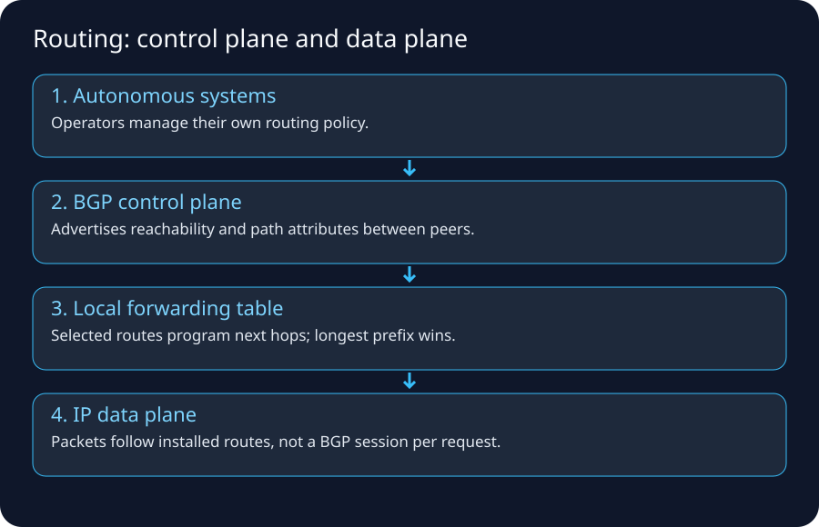
1. Routing in one sentence
Routing is the process of selecting a next hop/interface for a packet based primarily on its destination IP prefix and the routes known to the device.
A router usually does not know the complete future path of one packet. It knows its own routing table and forwards to a next hop. The next router repeats the process.
2. The routing table mental model
Example:
Destination Next hop / target
10.0.0.0/8 internal-router
172.16.50.0/24 vpn-tunnel
198.51.100.0/24 peer-A
0.0.0.0/0 isp-default
For destination 198.51.100.25, the /24 route is more specific than 0.0.0.0/0, so it wins.
Longest prefix match
This principle appears everywhere:
- host routing tables,
- enterprise routers,
- AWS VPC route tables,
- Transit Gateway route tables.
AWS explicitly documents most-specific/longest-prefix matching as the normal route-selection behavior before additional route-priority rules.
3. Connected, static, default and dynamic routes
Connected route
A network is directly attached to an interface.
Static route
An administrator explicitly configures destination -> next hop.
Default route
Catch-all route such as:
0.0.0.0/0 -> ISP
::/0 -> IPv6 upstream
Dynamic route
A routing protocol learns reachability from other routers and installs/selects routes according to protocol rules/policy.
Examples in enterprises include OSPF, IS-IS, BGP; exact usage varies.
4. Why you do not put “the whole Internet” into a home router manually
A home router normally sends unknown destinations to its ISP via a default route. The ISP participates in much larger routing systems and knows many prefixes.
Laptop: “not local -> gateway”
Home router: “not local -> ISP”
ISP edge/core: “this prefix -> this backbone/peer/transit path”
Destination AS: “this prefix is mine -> deliver internally”
Each device only needs the level of routing knowledge appropriate to its role.
5. Autonomous Systems: the Internet as organizations
An Autonomous System (AS) is a routing domain under common administrative control that presents routing policy to other networks. ISPs, cloud providers, CDNs, large enterprises, universities, and carriers can operate ASes.
Each participating AS can use an Autonomous System Number (ASN) for external BGP routing.
Think:
Internet = many ASes + links + agreements + routing policy
not:
Internet = one company/router hierarchy
6. BGP: what it really does
Border Gateway Protocol exchanges routes to IP prefixes plus path attributes. A BGP speaker applies local import policy, chooses a preferred route for each prefix, may install that result into forwarding state, and applies export policy before advertising anything onward.
The five route states to keep separate
peer advertisement
|
v
learned route (Adj-RIB-In)
|
+-- import filter / attribute policy --> rejected or eligible
|
v
best-path decision
|
+--------------------+-------------------+
v v
Loc-RIB / local route export policy
| |
v v
forwarding table Adj-RIB-Out / peer
The exact internal data structures vary, but the distinction is essential:
- learned does not mean accepted;
- accepted does not mean selected;
- selected does not guarantee forwarding if the next hop is unresolved or another routing source wins;
- installed does not mean advertised to every peer;
- advertised is controlled independently by export policy.
RFC 4271 describes the BGP decision process conceptually and explicitly permits implementations to realize it differently while preserving externally visible behavior. Therefore, do not memorize one vendor's tie-break list as a universal protocol law.
Path attributes — what question does each answer?
| Attribute/concept | Simplified question | Important caution |
|---|---|---|
NEXT_HOP |
Where must the router send traffic to use this route? | It must be reachable; BGP does not create the underlying path by itself |
LOCAL_PREF |
Which exit does my AS prefer? | Higher is normally preferred; it is propagated inside the AS, not to external peers |
AS_PATH |
Which ASes has the advertisement traversed? | Supports loop detection; shorter often wins only after stronger local policy |
MED |
Which entry point does a neighbor suggest? | Lower is commonly preferred; comparison scope and behavior are implementation/policy sensitive |
ORIGIN |
How was the route originally introduced to BGP? | A late discriminator, not proof that the prefix is legitimate |
| Community | Which policy tag travels with the route? | Meaning depends on the operator or documented well-known community |
Two decisions that engineers frequently mix up:
- Outbound traffic engineering: your
LOCAL_PREFand import policy decide how your AS exits. - Inbound traffic engineering: advertisements, more-specific prefixes, MED, AS-path prepending and provider communities can influence how other ASes enter, but the remote operator retains final policy control.
Do not memorize this wrong sentence
“BGP chooses the shortest path.”
Better:
BGP chooses a best path according to attributes and operator policy. AS-path length can matter, but it is not the only consideration.
7. BGP simplified example
Suppose AS65010 learns the same destination prefix, 203.0.113.0/24, through three neighbors. Its import policy expresses a common business preference: customer route, then peer, then paid transit.
| Candidate | Learned from | LOCAL_PREF | AS_PATH | Eligible? |
|---|---|---|---|---|
| A | customer AS65110 | 200 | 65110 64496 64497 |
yes |
| B | peer AS65200 | 150 | 65200 64497 |
yes |
| C | transit AS65300 | 100 | 65300 64497 |
yes |
Path A has a longer AS path, yet the local policy gives it the highest preference. AS65010 therefore selects A. The invariant is:
For one destination prefix, select among eligible routes using local policy first; only use later attributes when earlier policy does not decide the result.
This is why “BGP chooses the shortest AS path” is an unsafe interview answer.
Step-by-step decision and propagation trace
| Step | Control-plane event | Result |
|---|---|---|
| 1 | Three UPDATE messages announce 203.0.113.0/24 |
Three learned candidates exist |
| 2 | Import filters validate prefix/peer policy; next hops are checked | All three remain eligible |
| 3 | Policy assigns LOCAL_PREF 200/150/100 | Candidate A becomes preferred |
| 4 | Candidate A enters the local routing view; forwarding resolves its next hop | Data packets for the /24 leave toward AS65110 |
| 5 | Export policy evaluates the selected route per neighbor | Some neighbors receive A; others may receive no route or an aggregate |
| 6 | AS65110 withdraws A after a failure | A is removed; the decision process runs again |
| 7 | Candidate B now has the highest remaining LOCAL_PREF | Forwarding changes to AS65200 and permitted advertisements are updated |
Convergence is not instantaneous. Detection, withdrawal delivery, best-path recomputation, forwarding-table programming and downstream propagation all take time. Packet loss or a temporary path change can occur between steps 6 and 7.
Export policy — route propagation is not automatic flooding
A common commercial pattern is:
| Route learned from | Commonly exported to customers | Commonly exported to peers/transit |
|---|---|---|
| customer | yes | yes |
| peer | yes | no |
| transit provider | yes | no |
This simplified “valley-free” pattern prevents one AS from accidentally providing free transit between two peers/providers. It is a common policy, not a BGP protocol guarantee. Contracts, communities, route servers and operator design can produce different behavior.
Four examples that reveal the real pattern
- Policy beats length: the customer path above wins despite a longer AS path because LOCAL_PREF is higher.
- Loop prevention: AS65010 rejects a route whose AS_PATH already contains
65010; accepting it could reintroduce the route into its own loop. - Withdrawal failover: when A is withdrawn, B becomes best; the data plane changes only after control-plane processing and next-hop resolution.
- More-specific route:
203.0.113.0/25and203.0.113.0/24are different prefixes. Forwarding uses longest-prefix match, so the/25wins for its addresses even if the/24has a “better” BGP path. Best-path comparison occurs among routes for the same prefix.
Route-filtering safety controls
Import policy should validate what a neighbor is expected to announce. Export policy should ensure you advertise only authorized prefixes and intended transit reachability. Useful controls include prefix filters, maximum-prefix limits, AS-path filters, community policy and RPKI Route Origin Validation where deployed. RPKI origin validation helps answer whether an origin AS is authorized for a prefix; it does not validate every AS in the complete path or replace ordinary policy.
Common mistakes: accepting a full table from a customer that should send one prefix; treating a BGP session being Established as proof that useful routes are accepted; advertising an aggregate without reachable component routes; expecting AS-path prepending to override every remote policy; changing import policy without checking the return path and firewall state.
8. Peering vs transit
Peering
Networks exchange traffic directly, typically for their own/customer routes according to policy/agreement.
Transit
A customer network pays an upstream provider for broader/global Internet reachability.
Why this matters
Two companies in the same city may send traffic through a distant path if they lack direct peering or policy selects another route. A CDN invests heavily in peering/edge presence to bring content closer in network terms.
9. Internet Exchange Point (IXP)
An IXP is shared interconnection infrastructure where multiple networks can connect and exchange traffic. It reduces the need for a unique physical circuit between every pair of networks.
Conceptually:
ISP A ---+
CDN ---+--- IXP switching fabric
Cloud ---+
ISP B ---+
BGP sessions and policy determine what routes/traffic are exchanged.
10. Interior vs exterior routing
A large ISP can use one set of protocols/technologies internally and BGP externally.
inside AS: IGP / MPLS / segment routing / iBGP design
between AS: eBGP at boundaries
You do not need to master carrier architecture for AWS, but this prevents the misconception that every Internet router talks eBGP directly to every other router.
11. The data plane vs routing/control plane
Control plane
Learns/selects routes, runs routing protocols, builds forwarding state.
Data plane
Forwards actual packets using that state.
This is analogous to cloud control plane vs packet data path:
AWS API: configure route table
VPC data plane: forward packets according to route table
12. Asymmetric routing
The forward and return path may differ:
Client -> ISP A -> Transit X -> Server
Server -> Peer Y -> ISP B -> Client
The Internet does not promise symmetric hop-by-hop paths.
Why it matters:
- stateful middleboxes often need both directions,
- on-prem firewalls can drop return traffic if it bypasses the expected appliance,
- AWS Network Firewall stateful inspection requires correct/symmetric routing through inspection endpoints for flows being inspected.
13. ECMP and multiple next hops
Networks can use multiple equal-cost paths to distribute traffic. Hashing may keep packets of a flow on a consistent path while different flows use different paths.
Do not assume one traceroute run represents every flow or every moment.
14. Route convergence and failures
If a link/router disappears, routing systems need time to detect the failure and select/propagate alternatives. During convergence, packets can be lost or paths can change.
High availability therefore involves more than owning two circuits; you must design:
- route advertisement,
- failure detection,
- policy,
- stateful firewall symmetry,
- DNS/app failover behavior,
- capacity on surviving paths.
15. TTL/Hop Limit and traceroute
IPv4 TTL / IPv6 Hop Limit decreases as routers forward packets. traceroute exploits expiration behavior to infer hops by sending probes with increasing limits.
But traceroute is not a perfect truth source:
- routers can filter diagnostic responses,
- MPLS/tunnels can hide details,
- asymmetric paths can differ,
- load balancing can show varying hops,
- asterisks do not necessarily mean forwarding is broken.
16. Route summarization
Instead of advertising hundreds of small prefixes individually, networks can aggregate contiguous ranges where design permits.
Example:
10.20.0.0/24
10.20.1.0/24
...
10.20.255.0/24
can potentially be represented as:
10.20.0.0/16
Summarization reduces routing-state complexity but can create blackholes if the summary is advertised where some subranges are not actually reachable.
17. Legacy enterprise Internet edge
A serious enterprise might have:
ISP A
|
Edge Router A
/ \
LAN/DMZ -- Firewall pair
\ /
Edge Router B
|
ISP B
BGP can advertise enterprise-owned public prefixes to multiple ISPs. Firewalls/NAT sit in or near the path. Redundancy protocols, routing policy, and failover behavior must all agree.
For smaller companies, the provider may simply assign addresses/default routes without the enterprise running public BGP.
18. AWS route table mapping
AWS VPC route table example:
10.0.0.0/16 local
10.50.0.0/16 tgw-1234
0.0.0.0/0 nat-1234
For destination 10.50.2.8, the /16 Transit Gateway route is more specific than the default NAT route.
Public subnet
10.0.0.0/16 local
0.0.0.0/0 igw-1234
Private app subnet
10.0.0.0/16 local
0.0.0.0/0 nat-az-a
The route table does not itself grant firewall permission; route and policy are separate questions.
19. Transit Gateway as a cloud routing hub
When dozens/hundreds of VPCs and on-prem connections exist, full-mesh VPC peering becomes operationally difficult. Transit Gateway provides a regional transit hub with attachments and its own route tables/segmentation model.
Legacy analogy:
WAN/core router hub <-> Transit Gateway
But remember it is a managed cloud service with AWS-specific attachment and routing semantics, not a virtual Cisco CLI box.
20. Direct Connect and VPN routing
Site-to-Site VPN
Encrypted IPsec tunnels over Internet connectivity. Routes can be static or dynamically exchanged with BGP depending on setup.
Direct Connect
Dedicated/private connectivity from your network through a Direct Connect location/provider arrangement into AWS connectivity constructs. BGP is used for route exchange on virtual interfaces.
Common hybrid design uses Direct Connect as primary with VPN backup, but actual topology, failure domains, bandwidth, and route preference need explicit design/testing.
21. BGP failure/attack concepts you should recognize
Because BGP is trust/policy-heavy, route leaks and hijacks can send traffic to unexpected networks. Operators mitigate with mechanisms such as route filtering, prefix limits, and RPKI-based Route Origin Validation where deployed.
You do not need to become an Internet routing security specialist to understand the lesson:
DNS security and TLS are not substitutes for correct routing security, and routing security is not a substitute for end-to-end application authentication/encryption. They protect different layers.
22. Dry run — where does this packet go?
Routes:
0.0.0.0/0 -> Internet
10.0.0.0/8 -> Corporate WAN
10.20.0.0/16 -> Site B
10.20.30.0/24 -> Inspection firewall
10.20.30.50/32 -> Emergency host route
Destinations:
8.8.8.8 -> /0 Internet
10.99.1.2 -> /8 Corporate WAN
10.20.9.9 -> /16 Site B
10.20.30.88 -> /24 Inspection firewall
10.20.30.50 -> /32 Emergency host route
Always choose the most specific matching prefix first.
23. Common wrong mental models
- “Default route means Internet.” It means catch-all next hop; that next hop could be a firewall, VPN, TGW, or blackhole.
- “BGP knows application ports.” Normal IP route selection is prefix/policy based, not HTTP endpoint based.
- “More hops always means slower.” Physical distance, congestion, link capacity, queuing, and processing matter too.
- “Traceroute shows the exact packet path.” It is a diagnostic approximation.
- “Two links means HA.” Routing/failover/state/capacity design decides HA.
24. Best Internet/AWS examples
- Cloudflare BGP explanation: https://www.cloudflare.com/learning/security/glossary/what-is-bgp/
- RFC 4271, BGP-4 and conceptual decision process: https://www.rfc-editor.org/rfc/rfc4271
- RFC 7454 / BCP 194, BGP operations and security: https://www.rfc-editor.org/rfc/rfc7454
- AWS VPC route priority / longest-prefix match: https://docs.aws.amazon.com/vpc/latest/userguide/route-tables-priority.html
- AWS Transit Gateway: https://docs.aws.amazon.com/vpc/latest/tgw/what-is-transit-gateway.html
- AWS VPN routing: https://docs.aws.amazon.com/vpn/latest/s2svpn/VPNRoutingTypes.html
- AWS Direct Connect: https://docs.aws.amazon.com/directconnect/latest/UserGuide/Welcome.html
25. Memory trick
Prefix tells where; route tells next hop; BGP tells networks what prefixes are reachable under policy.
DNS → Routing → TCP/QUIC → TLS → HTTP: A Browser Request in Time Order
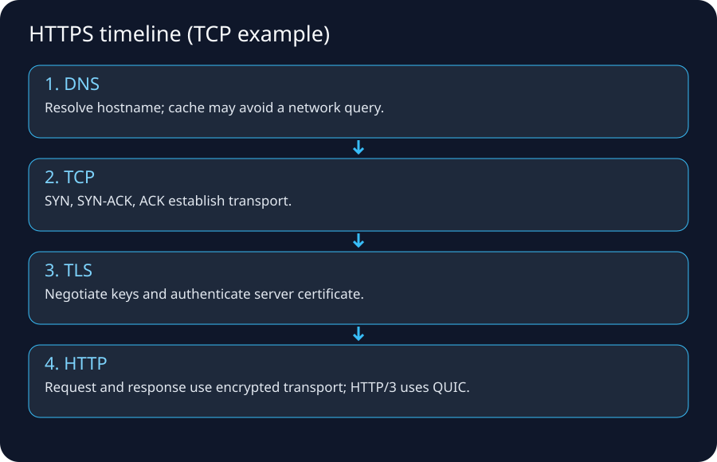
1. The mistake this lecture fixes
When someone says “the website is down,” at least five different systems may be failing:
Name resolution
IP routing
transport connection
TLS/security negotiation
HTTP/application behavior
A good engineer identifies which stage failed before changing anything.
2. Scenario
You enter:
https://api.example.com/orders?id=42
Assume DNS eventually returns:
api.example.com -> 198.51.100.20
We will trace the request from name to application response.
3. URL anatomy
https://api.example.com:443/orders?id=42
| | | |
scheme hostname port path/query
The port is often implicit:
HTTP -> 80 by convention
HTTPS -> 443 by convention
The hostname participates in DNS and TLS/HTTP behavior. It is not interchangeable with the IP address.
4. DNS: the naming layer
DNS translates names to records. For web access, A records can provide IPv4 addresses and AAAA records IPv6 addresses. CNAME and alias-style provider records can add indirection.
A full uncached conceptual lookup:
Browser/OS stub
|
v
Recursive resolver
|
+--> Root server: “who handles .com?”
|
+--> .com TLD: “who is authoritative for example.com?”
|
+--> authoritative nameserver: “what is api.example.com?”
|
v
Answer cached and returned to client
Cloudflare's DNS tutorial uses this same resolver → root → TLD → authoritative mental model.
5. Caching changes what you observe
The answer might already be cached in:
- browser/application cache,
- OS stub resolver/cache,
- local router/enterprise DNS,
- recursive resolver.
Therefore, changing a DNS record does not guarantee every client sees the new value immediately. TTLs and negative caching matter.
Debugging commands
nslookup api.example.com
dig api.example.com A
dig api.example.com AAAA
dig +trace example.com
+trace is a useful learning tool but differs from a normal recursive lookup path.
6. DNS can return different answers to different users
Reasons include:
- CDN/geo/latency routing,
- weighted routing,
- health-based failover,
- split-horizon/private DNS,
- IPv4 vs IPv6,
- resolver geography,
- cached older answer.
So “it resolves for me” does not prove another user's DNS path is identical.
7. AWS DNS mapping
Route 53 authoritative DNS
Hosts public/private DNS zones and routing policies.
VPC Resolver
AWS provides a DNS resolver to VPC resources. Current AWS docs describe the VPC Resolver/AmazonProvidedDNS as integrated into each AZ and reachable via special addresses including the VPC base + 2 IPv4 address and link-local resolver addresses.
Route 53 Resolver endpoints/rules
Used to integrate VPC DNS with on-premises DNS systems for hybrid resolution.
A common hybrid failure:
EC2 can route to on-prem network
BUT
internal.corp does not resolve
The route is fine; DNS forwarding/rules are wrong.
8. After DNS: choose a route to the returned IP
Suppose answer is 198.51.100.20. The host routing table decides where the packet should go.
Typical home host:
192.168.1.0/24 -> local
0.0.0.0/0 -> 192.168.1.1
The host does not ask DNS for a router. DNS answered the name question; the routing table answers the next-hop question.
9. TCP handshake
For classic HTTPS over TCP:
Client Server
51514 -> 443 SYN -------------------->
<---------------- SYN/ACK
ACK -------------------->
After this, both endpoints have connection state.
Common outcomes
Connection timeout
Possible causes:
- route missing/blackhole,
- firewall silently drops,
- destination down,
- load balancer has no reachable path,
- return route missing,
- severe network loss.
Connection refused
Often means the destination path is reachable and something actively rejected the connection—commonly no process is listening on that port or a device sent a reset.
Immediate ICMP unreachable
A router/host is explicitly reporting a reachability problem.
The exact interpretation depends on environment, but these symptoms are more informative than “network issue.”
10. TCP source and destination ports
client 192.168.1.25:51514
server 198.51.100.20:443
The server does not respond to destination port 443 on the client. It responds to the client's ephemeral port:
server 198.51.100.20:443
-> client 192.168.1.25:51514
This is why a stateful firewall can allow an outbound connection and automatically allow its response without a blanket inbound rule for port 443 on the client.
11. TCP reliability at beginner level
TCP numbers bytes, acknowledges received data, retransmits missing data, and implements flow/congestion control. It makes a lossy packet network look like a reliable ordered byte stream to the application under normal conditions.
But TCP cannot fix:
- a dead destination,
- permanent firewall blocks,
- application protocol bugs,
- excessive latency beyond application timeouts.
12. TLS: identity + confidentiality + integrity
After TCP is available, HTTPS performs TLS negotiation.
Modern TLS conceptually accomplishes:
- agree on protocol/cryptographic parameters,
- authenticate the server using its certificate/private-key proof and trust chain,
- derive shared session keys,
- protect subsequent application data with symmetric cryptography.
Cloudflare's TLS explanation notes that TLS handshakes authenticate, negotiate algorithms, and establish session keys; TLS 1.3 reduces handshake complexity compared with older versions.
13. Certificate hostname validation
If you request:
https://api.example.com
the certificate needs to be valid for that hostname according to certificate rules. Connecting directly to the raw IP can produce a certificate/name mismatch even when routing and TCP work.
This is a frequent mistake when testing ALB/CloudFront/custom domains.
14. SNI: one IP can serve many TLS hostnames
Server Name Indication lets a client indicate the intended hostname during TLS negotiation so a shared endpoint can select an appropriate certificate/configuration.
This helps explain how CDNs/load balancers host many domains behind shared edge addresses.
15. HTTP: finally, application semantics
After the secure channel exists:
GET /orders?id=42 HTTP/1.1
Host: api.example.com
Authorization: Bearer ...
Possible responses:
200 OK application succeeded
301/302 redirect
400 malformed/client request issue
401 authentication required/failed
403 understood but not permitted/policy block
404 route/resource not found
429 rate limit/throttling
500 application/server error
502/503/504 proxy/upstream/unavailable/timeout patterns
Do not map every 5xx to “network.” A load balancer can have perfect network connectivity to the client and still return 503 because no targets are healthy.
16. One browser page creates many dependency flows
HTML may reference:
CSS from CDN A
JavaScript from CDN B
fonts from provider C
images from object storage/CDN
API calls to api.example.com
analytics endpoint
identity provider
Thus:
“homepage HTML returned” != “page fully works”
Use browser developer tools/network waterfall to identify which dependent hostname/request failed.
17. HTTP/2 and HTTP/3 mental model
HTTP/2
Typically runs over one TCP/TLS connection and multiplexes streams, reducing some connection overhead compared with older HTTP/1.1 usage patterns.
HTTP/3
Runs over QUIC on UDP. QUIC integrates cryptographic/transport behavior and supports multiplexed streams without TCP's exact head-of-line behavior across all streams.
For troubleshooting, remember that “HTTPS” traffic may not always be TCP/443; HTTP/3 commonly uses QUIC/UDP on port 443.
18. Proxy and load balancer connection boundaries
A reverse proxy/load balancer can terminate one client connection and create a different backend connection:
Client --TLS/TCP--> ALB --HTTP/TCP or HTTPS/TCP--> app target
Therefore there can be two distinct failures:
- client ↔ load balancer,
- load balancer ↔ target.
Logs/metrics and health checks help identify which boundary is broken.
19. TLS termination patterns
At edge/CDN
Client TLS -> CloudFront
CloudFront -> origin connection
At ALB
Client TLS -> ALB :443
ALB -> app :8080 or :443
Pass-through to server
Layer-4 designs can forward encrypted traffic without terminating it at that intermediate layer.
Each pattern changes:
- certificate ownership,
- visibility for WAF/L7 routing,
- client IP propagation method,
- backend encryption,
- troubleshooting evidence.
20. DNS vs load balancing
DNS can return endpoint addresses, but DNS itself does not continuously proxy the connection.
Example:
Route 53 -> returns ALB name/address mapping
Client -> directly establishes connection to ALB endpoint
This is why DNS TTL and load-balancer health are different layers.
21. Packet walk with state table
| Stage | Source → destination | What was solved? | Best evidence |
|---|---|---|---|
| DNS | client → resolver | hostname → record | dig, resolver logs |
| route | client/router | next hop | route table, traceroute |
| TCP | client ephemeral → 443 | transport session | nc, SYN/SYN-ACK capture |
| TLS | client ↔ TLS endpoint | encryption + server identity | openssl s_client, curl -v |
| HTTP | browser → web endpoint | app request | access logs/status/body |
| backend | LB/proxy → target | upstream request | LB logs, target logs/metrics |
22. Practical debugging commands
# DNS
dig api.example.com
# Does TCP 443 open?
nc -vz api.example.com 443
# Observe TLS and HTTP
curl -v https://api.example.com/
# Inspect certificate/TLS
openssl s_client -connect api.example.com:443 -servername api.example.com
# Route/hops
traceroute api.example.com
# or Windows: tracert
Use these only against systems/networks where you are authorized to test.
23. AWS example: browser to private app tier
Browser
↓ DNS
Route 53
↓
CloudFront/WAF (optional)
↓ TLS/HTTP
ALB :443
↓ target selection
App :8080 in private subnet
↓
RDS :5432
Debug each boundary independently:
DNS correct?
CloudFront origin healthy?
ALB listener/certificate?
ALB SG to app SG?
target group health?
app listening 8080?
app SG to DB SG 5432?
DB connection/auth?
24. Best references
- Cloudflare DNS: https://www.cloudflare.com/learning/dns/what-is-dns/
- Cloudflare recursive DNS: https://www.cloudflare.com/learning/dns/what-is-recursive-dns/
- Cloudflare TLS handshake: https://www.cloudflare.com/learning/ssl/what-happens-in-a-tls-handshake/
- AWS VPC Resolver: https://docs.aws.amazon.com/Route53/latest/DeveloperGuide/resolver.html
- AWS Amazon DNS concepts: https://docs.aws.amazon.com/vpc/latest/userguide/AmazonDNS-concepts.html
25. Memory trick
Resolve → Route → Connect → Encrypt → Request.
DNS -> IP route -> TCP/QUIC -> TLS -> HTTP
When debugging, identify the first arrow that fails.
Ingress, Egress, Firewalls, WAF, Proxies, DMZ & Stateful vs Stateless Filtering
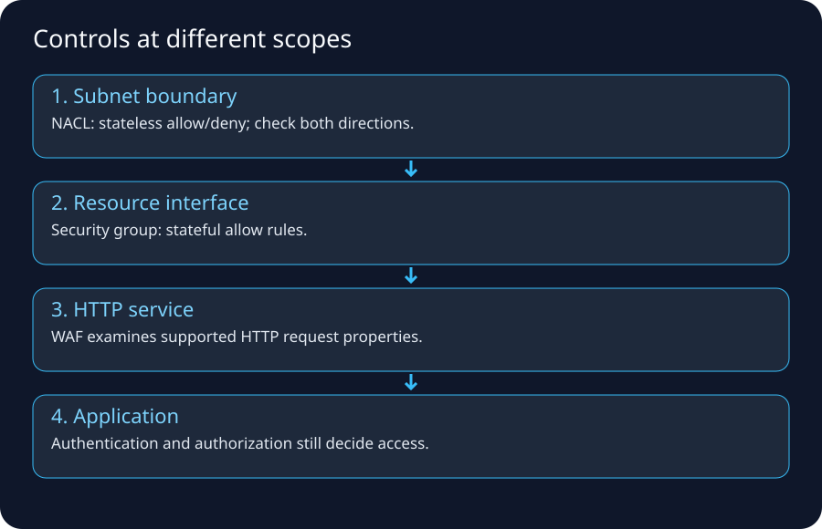
1. Start with the boundary
“Ingress” and “egress” are relative terms.
For an application VPC:
Internet -> VPC/application = ingress
VPC/application -> Internet = egress
For a database subnet:
app subnet -> DB subnet = ingress to DB subnet
DB response -> app subnet = egress from DB subnet
Always say ingress to what or egress from what.
2. A firewall is a policy enforcement point, not one specific product
A network firewall monitors/controls traffic based on rules. Products differ in what context they inspect:
- packet header only,
- connection state,
- protocol/application metadata,
- TLS-decrypted content where configured,
- signatures/IPS rules,
- domain/URL/user identity integrations.
Cloudflare's firewall primer correctly frames a firewall as controlling traffic between trust boundaries and emphasizes both inbound and outbound control.
3. Stateless filtering
A stateless rule evaluates packets independently.
Example:
allow inbound TCP dst port 443
That rule does not automatically imply:
allow return packets to client ephemeral ports
unless separate rules cover them.
AWS analogy
Network ACLs are stateless. AWS documentation specifically warns that return traffic must satisfy NACL rules independently.
4. Stateful filtering
A stateful firewall tracks a flow, commonly using the protocol and 5-tuple plus protocol-specific state and timeouts:
protocol = TCP
source = 10.0.1.25:51514
target = 10.0.2.40:443
state = SYN_SENT -> ESTABLISHED -> CLOSING
If policy allows:
client -> server TCP 443
return packets that belong to that established allowed flow can normally pass without an independent broad inbound/outbound rule for the reverse ephemeral port.
Packet-by-packet state trace
| Step | Packet | Stateful decision |
|---|---|---|
| 1 | client 51514 -> 443, SYN |
Match new-flow policy; create provisional state |
| 2 | server 443 -> 51514, SYN-ACK |
Reverse 5-tuple matches the tracked flow; allow |
| 3 | client ACK | Mark connection established |
| 4 | encrypted application data in either direction | Allow while packets match valid state/policy |
| 5 | FIN/ACK exchange or RST | Move toward closed state |
| 6 | Idle timeout expires | Delete state; a late packet may require a new allowed flow |
Stateful does not mean “allow forever.” Implementations enforce TCP-state rules, idle timeouts, capacity limits and product-specific behavior. UDP has no handshake, so state is inferred from recent matching datagrams and shorter timeouts are common.
AWS analogy
Security Groups are stateful. Response traffic for an allowed flow is recognized as part of the stateful model.
5. The ephemeral-port trap
Client initiates:
client:51514 -> server:443
Server responds:
server:443 -> client:51514
A stateless ACL must permit the relevant reverse-direction ephemeral-port traffic. This is one reason NACL rules are easier to misconfigure than Security Groups for ordinary application flows.
NACL rule direction depends on who initiated
For an instance acting as an HTTPS client:
| Subnet-boundary direction | Destination port | Purpose |
|---|---|---|
| outbound | 443 | initial request to server |
| inbound | client's ephemeral range | server response to the chosen source port |
For an instance acting as an HTTPS server:
| Subnet-boundary direction | Destination port | Purpose |
|---|---|---|
| inbound | 443 | initial client request |
| outbound | remote client's ephemeral range | response to client source port |
Do not blindly copy one range. Ephemeral ranges vary by operating system and client population. AWS examples commonly use ranges such as 32768-65535, while heterogeneous internet clients can require a broader 1024-65535 policy. Use the narrowest range that matches the actual endpoints and architecture.
6. Layer 3/4 network firewall vs Layer 7 WAF
Network firewall
Common decision inputs:
source/destination IP
protocol
source/destination port
connection state
IDS/IPS signatures/domain rules depending product
Web Application Firewall (WAF)
Understands HTTP/application-layer concepts such as:
URI path
headers
query strings
HTTP methods
request body patterns
SQLi/XSS signatures
rate-based web rules
A WAF is not a replacement for subnet/port-level firewalling. A network firewall is not automatically aware that /admin/deleteUser is a dangerous HTTP request.
7. Host firewall vs network firewall
A server can have local firewall rules:
Linux nftables/iptables/firewalld
Windows Defender Firewall
Even if every upstream firewall allows TCP 443, the host firewall can still block the connection.
Troubleshooting therefore asks:
perimeter policy?
subnet policy?
resource/ENI policy?
host firewall?
process listening?
8. DMZ/perimeter zone
Traditional enterprises often expose Internet-facing components in a separate perimeter network/DMZ rather than placing them directly inside trusted application/database networks.
Classic pattern:
Internet
↓
edge router
↓
external firewall
↓
DMZ: reverse proxy/WAF/load balancer
↓
internal firewall
↓
application network
↓
DB network
The DMZ limits how far an Internet-facing compromise can move without crossing additional policy boundaries.
AWS Prescriptive Guidance still uses the perimeter-zone idea when explaining migrations to architectures with CloudFront/WAF, Network Firewall, ALB, and routed inspection.
9. North–south inspection
North–south traffic crosses an environment/perimeter:
Internet -> workload
workload -> Internet
on-prem -> cloud
cloud -> on-prem
Controls may include:
- DDoS protection,
- edge WAF,
- network firewall/IPS,
- reverse proxy/load balancer,
- NAT,
- egress proxy/domain allowlists.
10. East–west inspection
East–west traffic moves inside the environment:
web -> app
app -> DB
VPC A -> VPC B
workload -> shared service
Legacy networks often relied heavily on VLANs + internal firewalls. Cloud environments can combine Security Groups, network firewalls, Transit Gateway route segmentation, Kubernetes policies, service-mesh/mTLS, and identity-based application controls.
11. Egress security is as important as ingress
If an attacker compromises an application, unrestricted egress can enable:
- command-and-control,
- data exfiltration,
- malware download,
- calls to unauthorized external services.
Legacy enterprises frequently use outbound firewalls/proxies and domain/category filtering. AWS designs can use:
- restrictive Security Groups where practical,
- AWS Network Firewall domain/rule policies,
- centralized egress VPCs,
- NAT Gateway with fixed Elastic IPs for vendor allowlists,
- VPC endpoints to keep AWS-service traffic off NAT/Internet paths.
12. Proxy vs firewall vs NAT vs load balancer
| Component | Main job | Does it usually create a new app/transport connection? |
|---|---|---|
| Router | forward packets between networks | no |
| NAT | translate address/port | no app proxy required |
| Stateful firewall | permit/deny flows with state | typically no app proxy required |
| Forward proxy | makes requests on behalf of clients | yes |
| Reverse proxy | receives client requests for servers | yes |
| Load balancer | distribute flows/requests | depends on L4/L7 implementation; often distinct frontend/backend state |
| WAF | inspect HTTP requests | usually attached/integrated at an L7 proxy/service |
These boxes can be combined in products, which is why enterprise diagrams sometimes show one appliance performing several roles.
13. Forward proxy
Used by clients for outbound access:
Employee browser -> corporate proxy -> Internet
Benefits can include:
- URL/domain policy,
- authentication/user attribution,
- malware scanning,
- logging,
- controlled egress addresses.
14. Reverse proxy
Used by servers/applications:
Internet client -> reverse proxy -> backend server
The client thinks it is talking to the service endpoint. The reverse proxy can terminate TLS, route by hostname/path, enforce headers, cache, and shield origin topology.
ALB and CloudFront can participate in reverse-proxy-like roles at different scopes.
15. IDS vs IPS
IDS
Detects/alerts on suspicious traffic.
IPS
Can actively block/drop traffic based on detection rules/policy.
Modern managed firewalls can provide both inspection and prevention behavior.
AWS Network Firewall includes stateless and stateful rule engines and supports Suricata-compatible stateful rules. Deployment design must route traffic through the firewall endpoints.
16. Why symmetric routing matters to stateful firewalls
Stateful inspection wants to observe both directions of the same flow.
Bad topology:
request -> firewall A -> server
response -> different path bypassing firewall A
The return path can look unrelated/invalid to stateful inspection systems or bypass intended policy entirely. A firewall that sees only the SYN-ACK has no state proving that it allowed the initiating SYN.
AWS Network Firewall documentation calls out symmetric routing requirements, particularly in centralized Transit Gateway inspection designs.
Centralized inspection dry run
Assume Spoke A calls Spoke B through a Transit Gateway and an inspection VPC:
Spoke A
-> Transit Gateway
-> inspection attachment / firewall endpoint
-> Transit Gateway
-> Spoke B
| Step | Expected path/state | Failure if asymmetric |
|---|---|---|
| 1 | SYN from A is routed through firewall endpoint X | X creates flow state |
| 2 | SYN reaches B | B replies to A's ephemeral port |
| 3 | Return route sends SYN-ACK back through endpoint X | X matches reverse tuple and allows it |
| 4 | TGW returns traffic to A | TCP handshake completes |
If the return uses endpoint Y or bypasses inspection, Y has no matching state and may drop the SYN-ACK; bypass also defeats the intended inspection policy. Transit Gateway appliance mode is designed to keep a flow on the same appliance network interface for its lifetime in supported centralized designs. Appliance mode does not repair incorrect route tables: forward and return routes must still intentionally traverse the inspection attachment.
NAT changes what the firewall sees
The observation point matters:
before source NAT: 10.0.1.25:51514 -> 198.51.100.20:443
after source NAT: 203.0.113.10:62001 -> 198.51.100.20:443
A rule or log on the pre-NAT side may reference the private tuple; a post-NAT device may see the translated tuple. During troubleshooting, draw the tuple at each boundary instead of searching every log for one unchanged address.
Four failure examples
- The Security Group permits outbound 443, but the custom NACL blocks inbound replies to the client ephemeral port.
- The forward flow crosses Network Firewall endpoint X; the return crosses Y because appliance mode/routing is wrong, so stateful inspection drops it.
- A NAT mapping expires during a long idle period; a later packet no longer maps to the private client.
- Policy allows
ALB-SG -> APP-SG:8080, but testing directly from an admin host fails because that source relationship is intentionally absent.
Stateful invariant: every packet accepted as part of an existing flow must match live state created by an allowed initiating direction, and both directions must traverse the state owner for as long as that state is required.
Common mistakes: opening server port 443 in both directions instead of following the reverse ephemeral destination; confusing Security Group state with NACL statelessness; assuming one successful packet proves route symmetry; ignoring state expiry; reading post-NAT logs as if they contain the original tuple; enabling a firewall without routing traffic through it.
17. Firewall rule examples: good vs bad
Too broad
ALLOW TCP 0-65535 FROM 0.0.0.0/0 TO app-network
Better intent
Internet -> public reverse proxy/WAF :443
reverse proxy -> app tier :8080
app tier -> DB tier :5432
app tier -> approved egress proxy :443
The second design expresses the relationship between tiers, making lateral movement and accidental exposure harder.
18. Security Group referencing in AWS
Instead of hardcoding transient instance IPs:
ALB-SG -> APP-SG TCP 8080
APP-SG -> DB-SG TCP 5432
This expresses architectural intent. Instances can scale/change IPs without rewriting network policy around each host.
19. NACL use case
NACLs can provide subnet-level coarse guardrails/explicit deny capability.
They are not usually the best place to express every application relationship because:
- they are subnet-scoped,
- stateless,
- rule-number ordered,
- return ephemeral ports must be considered.
Security Groups are normally the primary workload-level control in many VPC designs.
20. AWS Network Firewall
Use when you need managed network inspection such as:
- centralized egress filtering,
- intrusion prevention,
- domain-based controls,
- stateless/stateful policy,
- inspection across VPC/on-prem paths.
It is inserted through routing; creating a firewall without routing traffic through its endpoints does not inspect that traffic.
21. AWS WAF
Use at supported Layer-7 resources for HTTP/S protections such as:
- managed rule groups,
- IP/rate rules,
- SQL injection/XSS patterns,
- URI/header/query/body matching.
It does not replace Security Groups for an EC2 database port or NACLs for subnet guardrails.
22. Legacy inbound HTTPS flow
Public DNS
-> enterprise public VIP
-> border router
-> perimeter firewall permits 443
-> WAF/reverse proxy terminates TLS
-> load balancer chooses backend
-> internal firewall permits proxy/LB to app port
-> app
Each arrow can have a distinct owner and log source.
23. Legacy outbound API flow
App server
-> internal route
-> egress firewall/proxy
-> source NAT to public IP
-> ISP
-> vendor API
If vendor requires IP allowlisting, the enterprise stabilizes one/few egress public addresses.
AWS equivalent often becomes:
private app -> NAT Gateway EIP -> IGW -> vendor
possibly with Network Firewall/proxy inspection inserted.
24. Troubleshooting a timeout across firewalls
Check in order:
1 route reaches firewall?
2 firewall policy matches correct src/dst/proto/port?
3 NAT occurs where expected?
4 route after firewall reaches destination?
5 destination host firewall allows?
6 process listens?
7 return route comes back through expected stateful path?
8 translated return packet maps correctly?
Logs should prove each step; do not “temporarily allow all” in production as a default debugging method.
25. Evidence sources
Legacy:
- firewall session table,
- firewall traffic/deny logs,
- router route table,
- NAT translation table,
- load balancer logs,
- packet capture/tcpdump,
- proxy logs.
AWS:
- VPC Flow Logs,
- Network Firewall flow/alert logs,
- ALB access logs/metrics,
- WAF logs,
- Reachability Analyzer,
- route tables,
- Security Group/NACL configuration.
VPC Flow Logs can record ACCEPT or REJECT metadata, but they are not full packet payload captures and do not replace application logs.
26. Best references
- Cloudflare firewall overview: https://www.cloudflare.com/learning/security/what-is-a-firewall/
- AWS Security Group connection tracking: https://docs.aws.amazon.com/AWSEC2/latest/UserGuide/security-group-connection-tracking.html
- AWS custom NACLs and ephemeral ports: https://docs.aws.amazon.com/vpc/latest/userguide/custom-network-acl.html
- AWS SG/NACL flow-log example: https://docs.aws.amazon.com/vpc/latest/userguide/flow-logs-records-examples.html
- AWS Network Firewall how it works: https://docs.aws.amazon.com/network-firewall/latest/developerguide/how-it-works.html
- AWS Network Firewall rule engines: https://docs.aws.amazon.com/network-firewall/latest/developerguide/firewall-rules-engines.html
- AWS Network Firewall symmetric-routing troubleshooting: https://docs.aws.amazon.com/network-firewall/latest/developerguide/troubleshooting-general-issues.html
- AWS Transit Gateway appliance mode: https://docs.aws.amazon.com/vpc/latest/tgw/tgw-vpc-attachments.html#appliance-mode
- AWS perimeter-zone migration architecture: https://docs.aws.amazon.com/prescriptive-guidance/latest/migration-perimeter-zone-apps-network-firewall/architecture.html
27. Memory trick
Route asks: where next?
Firewall asks: allowed?
NAT asks: what address/port should be rewritten?
Proxy asks: can I make the request on your behalf?
Load balancer asks: which backend?
WAF asks: is this HTTP request acceptable?
Legacy / In-house Data Center Networking: Complete Flow Before Cloud
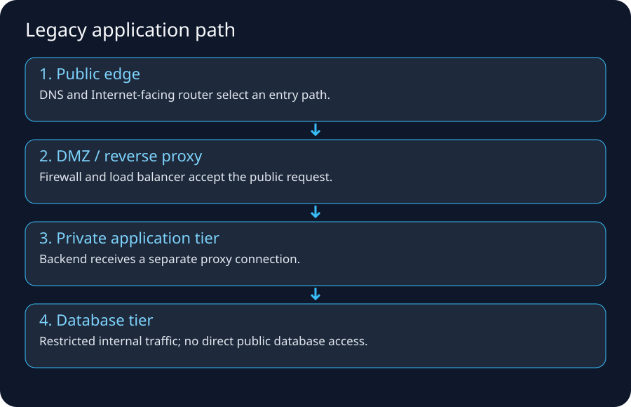
1. Why learn the legacy design first?
AWS did not invent IP routing, subnets, firewalls, load balancing, DNS, NAT, private connectivity, or segmentation. Cloud services mostly make these capabilities programmable and managed at a different operational layer.
If you understand the old data-center path, VPC architecture becomes a mapping exercise rather than memorization.
2. A representative enterprise Internet-facing architecture
Users
|
Internet
|
ISP A -------- ISP B
| |
Edge Router A Edge Router B
\ /
HA Firewall Pair
|
DMZ VLAN
WAF / Reverse Proxy
Load Balancer VIP
|
Internal Firewall
|
App VLAN
|
Internal Firewall
|
DB VLAN
Real environments vary widely. Some combine WAF/LB/firewall functions; others separate them into dedicated appliance clusters.
3. The physical layer people forget
A data center also requires:
- carrier circuits/fiber cross-connects,
- patch panels,
- top-of-rack switches,
- core/distribution switches,
- redundant power,
- optics/transceivers,
- rack space,
- spare ports/capacity,
- out-of-band management.
Cloud removes much direct hardware operation from application teams, but networking constraints still exist logically.
4. Carrier/ISP edge
An enterprise can connect to one or multiple ISPs.
Small design:
enterprise router -> one ISP -> default route
Larger resilient design:
ISP A
|
Edge Router A
\ /
Enterprise
/ \
Edge Router B
|
ISP B
Public BGP may be used when the organization has the addressing/ASN/design requirements to advertise prefixes through multiple providers.
5. Public IP ownership and publishing services
A company might receive/provider-assign public addresses or own provider-independent address space. It then exposes services through:
- static NAT,
- firewall VIPs,
- load-balancer virtual IPs,
- reverse proxies,
- public DNS.
Example:
www.corp.example -> 203.0.113.50
At the edge:
203.0.113.50:443 -> load balancer/WAF tier
The backend server can remain on private RFC1918 addressing.
6. VLANs and subnets
A typical segmentation plan:
DMZ VLAN 10.10.10.0/24
Web VLAN 10.10.20.0/24
App VLAN 10.10.30.0/24
DB VLAN 10.10.40.0/24
Management 10.10.50.0/24
Backup 10.10.60.0/24
VLAN is a Layer-2 segmentation mechanism; subnet is an IP Layer-3 concept. They are often mapped one-to-one operationally but are not definitionally the same thing.
7. Default gateway and first-hop redundancy
Servers in a VLAN need a default gateway, often provided by redundant switches/routers/firewalls using a first-hop redundancy mechanism or clustered virtual gateway.
Example server:
IP: 10.10.30.25/24
Gateway: 10.10.30.1
The virtual gateway can survive one physical network device failing.
8. Core/distribution/access networking
Classic campus/data-center hierarchy:
servers
↓
access / top-of-rack switches
↓
distribution/aggregation
↓
core
↓
firewall/WAN/Internet
Modern leaf-spine fabrics flatten this topology, but the reasoning remains: many server links aggregate into redundant high-capacity routed paths.
9. DMZ/perimeter zone
Internet-facing components are isolated from trusted internal networks.
Why?
If the public web server is compromised, the attacker should not automatically receive unrestricted Layer-3 access to database/admin networks.
Policy can be:
Internet -> WAF/LB :443 only
WAF/LB -> web/app :8080 only
app -> DB :5432 only
admin -> management :approved protocols only
10. Traditional firewall pair
Enterprises often run two firewalls for HA:
Firewall A active
Firewall B standby
or active/active designs depending platform/topology.
Operational work includes:
- rule changes/tickets,
- NAT rules,
- software upgrades,
- failover tests,
- state synchronization,
- hardware replacement,
- interface/VLAN configuration,
- capacity planning,
- logging/SIEM integration.
AWS managed networking removes some appliance lifecycle work but replaces it with route/policy/service design responsibilities.
11. Load balancer appliance
A legacy load balancer commonly exposes a VIP:
VIP 10.10.10.50:443
Backend pool:
10.10.20.11:8080
10.10.20.12:8080
10.10.20.13:8080
It monitors health and chooses a backend. L7 devices can also route by hostname/path and terminate TLS.
AWS mapping:
F5/NetScaler/HAProxy cluster -> ALB/NLB depending requirement
12. Internal DNS
Corporate DNS often handles both:
- public zones or delegation relationships,
- internal-only names such as
db01.prod.corp.local/enterprise domains.
Clients point at corporate recursive resolvers, often integrated with Active Directory in Windows-heavy environments.
Hybrid cloud introduces split resolution problems:
on-prem clients must resolve AWS private names
AWS workloads must resolve on-prem private names
Route 53 Resolver endpoints/rules solve the DNS forwarding part; VPN/DX/TGW solve the network reachability part.
13. Inbound web request: complete legacy flow
Assume user requests:
https://www.corp.example/orders
Step 1: DNS
Public authoritative DNS returns 203.0.113.50.
Step 2: Internet routing
BGP/Internet routing carries traffic toward the enterprise's provider/edge.
Step 3: edge router
Enterprise edge receives the public-prefix traffic and forwards according to internal edge routing.
Step 4: perimeter firewall
Firewall permits TCP 443 for the published service and may perform NAT/VIP forwarding.
Step 5: WAF/reverse proxy
Inspects HTTP/TLS according to architecture; can block web attacks.
Step 6: load balancer
Chooses a healthy application target.
Step 7: internal routing/firewall
Traffic crosses into application VLAN only on approved port.
Step 8: application
App processes business logic.
Step 9: DB flow
App opens a separate connection to DB network, e.g. TCP 5432.
Step 10: response
Return traffic follows valid routes/state through the environment and back to the user.
14. Outbound app-to-SaaS flow
App 10.10.30.25 calls vendor API api.vendor.example:443.
App
-> default gateway
-> internal/core routing
-> egress firewall
-> source NAT
-> ISP
-> Internet/BGP
-> vendor edge
The vendor may allowlist enterprise public NAT addresses.
Problem during migration:
on-prem egress IP is allowlisted
AWS NAT Gateway EIP is not
The cloud app can resolve DNS and reach the Internet but gets HTTP 403 or connection rejection from vendor policy. That is not necessarily an AWS routing failure.
15. East-west app-to-DB flow
App 10.10.30.25:ephemeral
-> route to 10.10.40.0/24
-> internal firewall policy
-> DB 10.10.40.10:5432
The DB does not need Internet access to serve internal clients.
This maps nicely to AWS:
APP-SG -> DB-SG :5432
DB subnet no default Internet route
16. Corporate user to internal app
A user in an office may traverse:
Laptop
-> access switch/Wi-Fi
-> campus gateway
-> WAN/MPLS/SD-WAN
-> data center firewall
-> internal load balancer
-> app
If remote:
Laptop
-> home ISP
-> corporate VPN gateway
-> internal network
-> app
This is the conceptual predecessor to Client VPN, Site-to-Site VPN, Direct Connect, Zero Trust/private access products, and hybrid cloud routing.
17. MPLS/private WAN legacy model
Enterprises historically connected offices/data centers using carrier private WANs such as MPLS L3VPN services.
Conceptually:
Branch A -> carrier private WAN -> Data Center
Branch B -> carrier private WAN -> Data Center
Cloud migration adds AWS as another site through VPN/Direct Connect, or shifts to Internet/SD-WAN-centric designs.
18. Two data centers for DR
Legacy resiliency might use:
Primary DC
Secondary DR DC
with:
- replicated databases/storage,
- DNS/global load-balancing failover,
- WAN replication links,
- duplicated firewall/LB infrastructure,
- runbooks to activate DR.
Cloud Regions/AZs change implementation but not the core questions: failure domain, RTO, RPO, data replication, traffic failover, capacity.
19. Change management in legacy networking
A simple requirement like “allow app A to call database B” can become:
1 submit firewall ticket
2 identify exact source subnet
3 identify destination VIP/server
4 identify port/protocol
5 security review
6 change window
7 implement ACL/firewall rule
8 test
9 update CMDB/documentation
Cloud infrastructure-as-code can make these changes faster/repeatable, but careless automation can also reproduce bad policy instantly. Automation does not remove the need for correct intent.
20. Common legacy failure scenarios
Wrong VLAN
Server connected/tagged into wrong broadcast domain.
Duplicate IP
Two hosts use same address.
Bad mask/gateway
Local/remote decisions fail.
Firewall asymmetric routing
Request and reply cross different firewalls without shared state.
NAT shadowing/order
Wrong translation rule matches before intended rule.
Stale load-balancer pool
VIP exists but backends unhealthy.
DNS stale record
Hostname points to retired VIP.
Route leak/advertisement mistake
Traffic follows wrong WAN/ISP path.
MTU mismatch through VPN
Small traffic succeeds; larger flows fail.
21. Legacy → AWS mapping table
| Legacy data center | AWS service/primitive |
|---|---|
| IP address management spreadsheet/IPAM appliance | VPC IPAM |
| VLAN/subnet | VPC subnet (not exactly a VLAN) |
| core router | distributed VPC routing / Transit Gateway for hub patterns |
| Internet edge router | Internet Gateway + AWS edge routing |
| firewall pair | Security Groups/NACLs and/or Network Firewall/appliances |
| NAT appliance | NAT Gateway |
| WAF appliance | AWS WAF |
| F5/ADC load balancer | ALB/NLB/GWLB depending need |
| DNS appliance/service | Route 53 + VPC Resolver |
| MPLS/private circuit | Direct Connect / carrier integration |
| IPsec concentrator | Site-to-Site VPN |
| firewall traffic logs | VPC Flow Logs / Network Firewall logs |
| network path testing | Reachability Analyzer + conventional tools |
22. What does not map one-to-one
Do not say:
VPC = VLAN
Security Group = firewall appliance
Internet Gateway = physical router
These analogies help intuition but implementations differ. AWS constructs are distributed managed services with cloud-specific semantics.
23. The best migration question
For every legacy component ask:
What responsibility did the appliance/team own?
What AWS service now owns part of that responsibility?
What responsibility still belongs to me?
Example NAT appliance:
Old responsibilities:
hardware HA, patch OS, scale appliance, NAT rules, routing, logs
NAT Gateway removes:
OS/hardware management and much HA/scaling implementation
You still own:
subnet/route design, AZ resilience, EIP/vendor allowlists,
cost, monitoring, connection behavior, security/egress policy
24. Reference trail
- AWS perimeter-zone migration architecture: https://docs.aws.amazon.com/prescriptive-guidance/latest/migration-perimeter-zone-apps-network-firewall/architecture.html
- AWS Security Reference Architecture network guidance: https://docs.aws.amazon.com/prescriptive-guidance/latest/security-reference-architecture/network.html
- AWS hybrid networking: https://docs.aws.amazon.com/whitepapers/latest/aws-vpc-connectivity-options/welcome.html
25. Memory map
Legacy Internet app:
DNS -> ISP/BGP -> edge router -> firewall/NAT -> DMZ/WAF/LB
-> app VLAN -> internal firewall -> DB VLAN
AWS Internet app:
Route 53 -> AWS edge/CloudFront/WAF -> IGW/public ingress
-> ALB -> SG -> private app -> SG -> DB
AWS Internet & VPC Packet Flow — From Browser to Private Application and Back
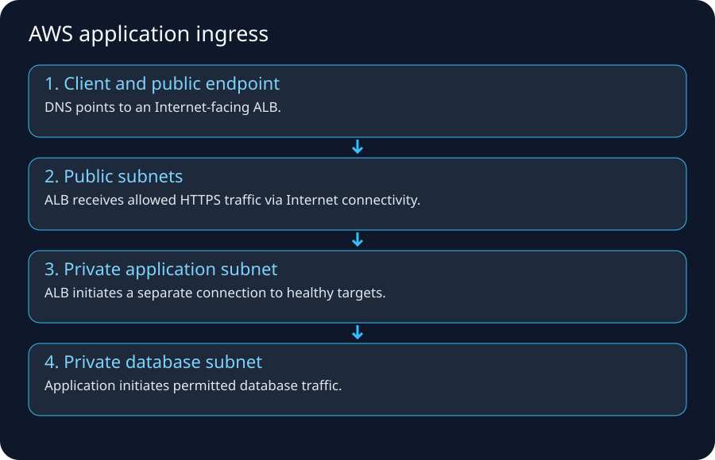
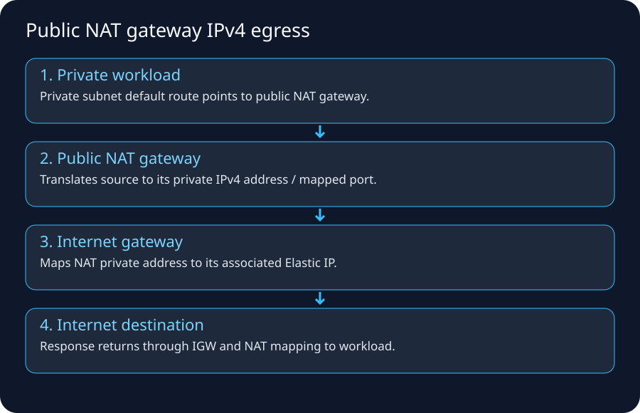
1. The AWS networking idea that removes most confusion
Do not ask only:
“Is the subnet public?”
Ask this complete set:
What IP does the resource have?
Which route table applies?
What target does the best route select?
What translation occurs, if any?
Which stateful/stateless policies apply?
What is the return path?
What endpoint is actually listening?
A VPC is software-defined networking, but packet reachability still depends on those ordinary networking questions.
2. Core objects and their responsibilities
| AWS object | Mental model | It does NOT automatically do |
|---|---|---|
| VPC | regional private routing/addressing boundary | make resources public |
| Subnet | AZ-scoped IP allocation/routing association | become public because named “public” |
| ENI | virtual network interface with IP/security associations | guarantee route to Internet |
| Route table | destination prefix → target decision | grant firewall permission |
| Internet Gateway | VPC Internet-routing edge; public IPv4 mapping behavior | assign app auth or open ports |
| NAT Gateway | source translation for initiated private IPv4 egress | accept unsolicited inbound sessions to private instances |
| Security Group | stateful allow policy on supported resource interfaces | explicit deny rules like NACL |
| Network ACL | stateless subnet-level allow/deny rules | remember connection return state |
| VPC endpoint | private connectivity to supported service | make every Internet service private |
| Transit Gateway | regional transit routing hub | inspect traffic by itself |
| Network Firewall | managed traffic inspection via routed endpoints | inspect traffic not routed through it |
| Route 53/VPC Resolver | DNS/name resolution | create IP reachability by itself |
3. What makes an AWS subnet “public”?
AWS documentation describes a subnet whose associated route table has a route to an Internet Gateway as a public subnet.
Typical IPv4 public route table:
10.0.0.0/16 -> local
0.0.0.0/0 -> igw-1234
But an EC2 instance also needs suitable public addressing and security rules to be directly reachable from the Internet over IPv4.
A route to IGW is necessary, not sufficient
Bad mental model:
public subnet -> every instance exposed
Better:
subnet route can reach IGW
+ resource has public IPv4/EIP if direct IPv4 Internet identity required
+ SG/NACL allow desired traffic
+ service listens
+ return route/state works
4. EC2 public IPv4: what the guest actually sees
AWS documents an important detail: an EC2 public IPv4 is mapped to the primary private IPv4 through NAT. The guest OS normally sees its private IPv4 on the network interface, not the public IPv4 as another ordinary local NIC address.
Example:
EC2 guest sees: 10.0.1.25
AWS console shows: public 203.0.113.25 (example)
Internet client uses: 203.0.113.25
IGW mapping delivers: private 10.0.1.25 inside VPC
This is why a process can listen on 0.0.0.0:443/private interface and receive traffic sent to the associated public address through the VPC Internet path.
5. Direct public EC2 ingress flow
Simplified example:
Internet client
-> Internet routing/AWS edge
-> Internet Gateway
-> public IPv4 mapping to instance private IPv4
-> subnet/NACL boundary
-> ENI/Security Group
-> EC2 operating system
-> host firewall
-> application listener
Return traffic must pass the reverse policy/path.
This pattern is valid for selected use cases but is usually not the preferred architecture for a scalable public web application; load balancers/CDNs provide better abstraction and operational controls.
6. Recommended multi-tier public web flow
Browser
↓
Route 53 DNS
↓
CloudFront (optional CDN/edge)
↓
AWS WAF (often associated at edge/ALB/API surface)
↓
Application Load Balancer in public subnets
↓
APP security group relationship
↓
EC2/ECS/EKS targets in private app subnets
↓
DB security group relationship
↓
RDS/Aurora in isolated/private DB subnets
The app instances do not need public IPv4 addresses merely because end users on the Internet use the application.
7. Step-by-step ingress dry run
Assume:
VPC 10.0.0.0/16
Public subnet A 10.0.1.0/24
Public subnet B 10.0.2.0/24
App subnet A 10.0.11.0/24
App subnet B 10.0.12.0/24
DB subnet A 10.0.21.0/24
DB subnet B 10.0.22.0/24
Security intent:
Internet -> ALB-SG TCP 443
ALB-SG -> APP-SG TCP 8080
APP-SG -> DB-SG TCP 5432
Step A — DNS
app.example.com resolves to CloudFront/ALB-related endpoint information according to design.
Step B — Internet reaches AWS edge/public endpoint
The user's ISP and Internet routing deliver traffic toward the AWS-advertised prefix/edge.
Step C — optional CloudFront/WAF
CloudFront may terminate client TLS/cache/forward to origin. WAF evaluates HTTP requests where associated.
Step D — ALB public listener
ALB listener accepts HTTPS 443. ALB-SG permits client ingress.
Step E — target selection
ALB chooses a healthy target from its target group, then initiates/uses backend connectivity to the private app IP/port.
Step F — app SG
APP-SG permits TCP 8080 from ALB-SG, not from the whole Internet.
Step G — app to database
Application opens a separate DB connection to port 5432. DB-SG permits source APP-SG.
This is three separate transport/security relationships, not one giant browser-to-database connection.
8. Why the app subnet can be private yet ALB can reach it
Private does not mean “isolated from the VPC.”
The VPC local route provides connectivity among subnets in the VPC, subject to security policies and routing nuances.
10.0.0.0/16 -> local
Therefore public ALB subnets can route to private app subnets without giving app instances public Internet addresses.
9. Private IPv4 egress through NAT Gateway
App 10.0.11.25 needs https://api.vendor.example.
Private route table:
10.0.0.0/16 -> local
0.0.0.0/0 -> nat-gw-a
NAT Gateway lives in a public subnet with Internet route/EIP context.
Flow:
10.0.11.25:51514
-> private route table
-> NAT Gateway
-> source translated to NAT EIP/port
-> public subnet route/IGW
-> Internet
-> vendor:443
AWS docs state that the NAT device replaces the source IPv4 address and maps responses back while not accepting unsolicited Internet connections to the private resources.
10. NAT Gateway is AZ-scoped architecture-wise
For resilient multi-AZ designs, a common pattern is one NAT Gateway per AZ with private subnets routing to the NAT in the same AZ.
Why?
- avoid one-AZ dependency for all egress,
- reduce unnecessary cross-AZ traffic patterns/cost,
- keep failure domains aligned.
One NAT for the whole VPC may be cheaper for small/noncritical environments but carries different resilience/cost trade-offs.
11. VPC endpoints: avoid the NAT/Internet-style path for supported AWS services
For supported services, endpoints can provide private connectivity.
Example S3 gateway endpoint concept:
private EC2 -> route/prefix-list endpoint -> S3
instead of:
private EC2 -> NAT GW -> IGW/public service endpoint path
Benefits can include lower NAT dependence, tighter policy, and reduced exposure/cost depending on service/traffic pattern.
Interface endpoints / PrivateLink
Interface endpoints create private ENIs/endpoints in your VPC for supported services/private services. Private DNS can make the standard service name resolve to the private endpoint addresses in appropriate configurations.
12. IPv6 Internet access
AWS IPv6 addresses are globally unique. For public IPv6 Internet access, routes can point ::/0 to an Internet Gateway when inbound/outbound reachability is desired and policy permits.
For private-subnet-style outbound-only IPv6:
::/0 -> egress-only Internet Gateway
AWS describes the egress-only IGW as stateful: it permits outbound IPv6 communication and return traffic while preventing Internet hosts from initiating connections to those instances.
13. Security Groups: think relationships, not perimeter only
Good three-tier policy:
ALB-SG inbound 443 from Internet/client ranges
APP-SG inbound 8080 from ALB-SG
DB-SG inbound 5432 from APP-SG
This is micro-segmentation at the workload interface level.
Security Groups are stateful; response traffic for allowed flows is automatically recognized by the stateful model.
14. NACLs: subnet guardrail and the return-traffic problem
NACLs are stateless and evaluated separately for inbound/outbound packets.
If you allow:
inbound TCP 443
but deny relevant reverse ephemeral traffic, sessions fail.
AWS's own Flow Logs examples use ping/security-rule scenarios to demonstrate SG statefulness vs NACL statelessness.
15. Route tables and Security Groups solve different questions
Route table: WHERE should packet go?
Security Group: MAY this flow pass this interface/resource boundary?
A perfect route plus blocked SG = no application connection.
An open SG plus missing route = no application connection.
Never troubleshoot them as one concept.
16. NACL and SG evaluation mental path
A simplified inbound path can include both subnet-level NACL and ENI-associated Security Group behavior. Exact distributed implementation should not be imagined as literal hardware boxes in a fixed rack order, but operationally both policy layers must permit the flow according to their semantics.
17. AWS Network Firewall insertion
Network Firewall creates endpoints in dedicated subnets/AZs. To inspect traffic, route tables must steer flows through those endpoints.
Possible centralized egress path:
Spoke VPC
-> Transit Gateway
-> Inspection VPC
-> Network Firewall endpoint
-> NAT/egress path
-> Internet
Stateful inspection requires carefully designed symmetric paths. AWS documentation explicitly warns about routing symmetry in centralized inspection designs.
18. Gateway Load Balancer (GWLB)
GWLB enables scalable insertion of compatible virtual network appliances from vendors or your own appliance fleet. Think of it as a service-insertion/load-distribution primitive for Layer-3 virtual appliances, not as a web ALB replacement.
Legacy mapping:
physical firewall appliance cluster
-> virtual appliance fleet behind GWLB
19. Transit Gateway packet flow
Spoke A needs Spoke B:
VPC A subnet route: 10.2.0.0/16 -> TGW
TGW route table: 10.2.0.0/16 -> VPC B attachment
VPC B subnet route: return path -> TGW
There are two route-table systems to reason about:
- VPC subnet route tables,
- Transit Gateway route tables.
Missing either direction can break connectivity.
20. VPC Peering
Peering gives private routed connectivity between VPCs, subject to route/security configuration. It is not transitive: if A peers with B and B peers with C, A does not automatically route through B to C via those peerings.
This limitation is one reason Transit Gateway becomes attractive at larger scale.
21. Hybrid on-prem to AWS through VPN/Direct Connect
Conceptual path:
On-prem app
-> enterprise router/firewall
-> VPN or Direct Connect
-> VGW/TGW/DXGW design
-> VPC route
-> EC2/private load balancer
You need:
- non-overlapping/managed address space,
- routes advertised/propagated correctly,
- Security Groups/NACLs/firewalls,
- DNS resolution across environments,
- return routing,
- MTU considerations,
- redundancy.
22. Route 53 Resolver hybrid DNS
Network connectivity does not automatically solve private names.
Example:
EC2 can ping 10.50.1.10 on-prem
but cannot resolve db.corp.example
Add/verify Resolver outbound endpoints/rules toward on-prem DNS, plus inbound endpoints if on-prem clients must resolve AWS private hosted-zone names.
23. VPC Flow Logs
Flow Logs capture metadata about IP flows for ENIs/subnets/VPCs depending configuration. Fields can include source/destination, ports, protocol, bytes/packets, interface and action such as ACCEPT/REJECT.
They answer:
Did network policy accept/reject this flow metadata?
Did traffic reach this ENI/subnet observation point?
They do not show:
HTTP request body
SQL statement
full packet payload
application exception
24. Reachability Analyzer
Reachability Analyzer performs static configuration analysis; it does not send test packets. It can identify a reachable configuration path or blocking component among supported AWS networking resources.
Use it before randomly editing route tables/SGs.
25. Flow Logs + Reachability Analyzer + app logs = layered evidence
A strong incident workflow:
Reachability Analyzer: should config permit a path?
VPC Flow Logs: what flows were accepted/rejected/observed?
ALB/Network Firewall/WAF logs: what did intermediate services do?
OS tcpdump/socket tools: did packets reach host/process?
App logs/traces: what did the application do?
No single tool replaces all layers.
26. Scenario: private EC2 cannot download patches
Check:
1 DNS resolves?
2 private subnet route 0.0.0.0/0 -> NAT?
3 NAT exists/available in proper public subnet/AZ design?
4 NAT subnet route 0.0.0.0/0 -> IGW?
5 NAT has required public connectivity/EIP context?
6 SG egress permits?
7 NACL allows both directions/ephemeral ports?
8 destination/IPv4 path available?
If calling S3, ask whether an S3 endpoint should replace NAT for that traffic.
27. Scenario: ALB is reachable but targets unhealthy
This proves the client-to-ALB path is at least partly working. Check the separate backend boundary:
ALB target group port/protocol
ALB-SG -> APP-SG
NACLs
app process listening on expected IP/port
health-check path/status
application startup/dependency failures
28. Scenario: EC2 has public IP but Internet cannot connect
Possible causes:
- subnet route table lacks
0.0.0.0/0 -> IGW, - IGW not attached,
- SG inbound does not allow port/source,
- NACL blocks,
- host firewall blocks,
- service not listening,
- wrong public IP/DNS,
- IPv6 vs IPv4 mismatch,
- routing through an inspection architecture incorrectly.
Public IP alone is not enough.
29. Scenario: private app can call most sites but one vendor fails
Possible non-AWS-network causes:
- vendor allowlist missing NAT Gateway EIP,
- TLS SNI/certificate/protocol mismatch,
- vendor geo/ASN/security policy,
- DNS answer differs,
- rate limit,
- MTU/path issue,
- vendor outage.
First record the NAT egress public IP and exact curl -v/TLS symptom.
30. Legacy → AWS packet-path mapping
Legacy:
server NIC -> VLAN -> core route -> firewall/NAT -> edge router -> ISP
AWS private egress:
ENI -> subnet route table -> NAT Gateway -> IGW -> Internet/AWS edge
Legacy ingress:
ISP -> edge router -> firewall -> DMZ WAF/LB -> app VLAN
AWS ingress:
Internet/AWS edge -> CloudFront/WAF -> ALB -> SG -> private app
31. Best official sources
- Internet Gateway: https://docs.aws.amazon.com/vpc/latest/userguide/VPC_Internet_Gateway.html
- NAT Gateway scenarios: https://docs.aws.amazon.com/vpc/latest/userguide/nat-gateway-scenarios.html
- VPC NAT devices: https://docs.aws.amazon.com/vpc/latest/userguide/vpc-nat.html
- Route priority: https://docs.aws.amazon.com/vpc/latest/userguide/route-tables-priority.html
- VPC Resolver: https://docs.aws.amazon.com/Route53/latest/DeveloperGuide/resolver.html
- Egress-only IGW: https://docs.aws.amazon.com/vpc/latest/userguide/egress-only-internet-gateway.html
- VPC Flow Logs: https://docs.aws.amazon.com/vpc/latest/userguide/flow-logs.html
- Reachability Analyzer: https://docs.aws.amazon.com/vpc/latest/reachability/what-is-reachability-analyzer.html
- Network Firewall architectures: https://docs.aws.amazon.com/network-firewall/latest/developerguide/architectures.html
32. What you must remember
Public subnet = route-table property/path, not a name.
Public IPv4 alone ≠ reachable.
Route ≠ permission.
SG stateful; NACL stateless.
Private app can receive traffic from public ALB without public IP.
Private IPv4 Internet egress commonly uses NAT Gateway.
IPv6 outbound-only can use egress-only IGW.
Endpoints can avoid NAT for supported AWS-service traffic.
Network Firewall only inspects traffic routed through it.
Flow Logs show flow metadata, not application payload.
Network Troubleshooting Labs — Stop Guessing, Prove the Broken Layer
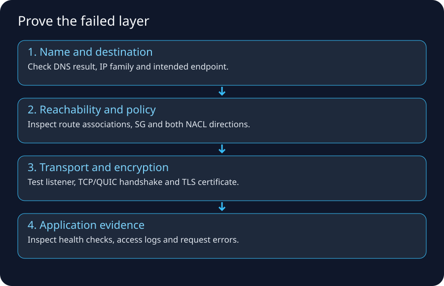
1. The golden rule
Change nothing until you can state the first layer where observed behavior differs from expected behavior.
Randomly opening firewalls creates security risk and destroys evidence.
2. The troubleshooting ladder
Use this order:
1. Name/DNS
2. Local address/interface
3. Local route/default gateway
4. End-to-end route/reachability
5. Firewall/security policy
6. Transport/listener
7. TLS
8. HTTP/application
9. downstream dependencies
A later layer cannot work if an earlier required layer is broken.
3. Build an evidence table before testing
| Question | Expected | Observed | Evidence |
|---|---|---|---|
| DNS A/AAAA | expected endpoint | ? | dig |
| source IP | expected interface | ? | ip addr |
| route | expected gateway/target | ? | ip route get / VPC RT |
| TCP port | opens | ? | nc / curl |
| TLS cert | valid hostname | ? | openssl |
| HTTP | 200/expected code | ? | curl -v |
| backend | healthy | ? | LB target health/logs |
This prevents “I think the route is correct” debugging.
4. Local host lab
Linux examples:
ip addrip route
ip route get 1.1.1.1
arp -n
resolvectl status # systemd systems
ss -lntup
macOS equivalents include:
ifconfig
netstat -rn
route -n get default
arp -a
lsof -iTCP -sTCP:LISTEN
Windows:
ipconfig /all
route print
arp -a
Get-NetTCPConnection -State Listen
Exercise
Find your:
- active interface,
- private IP,
- prefix/netmask,
- default gateway,
- DNS resolvers,
- listening local ports.
5. DNS lab
nslookup example.com
dig example.com A
dig example.com AAAA
Then compare a specific resolver:
dig @1.1.1.1 example.com A
dig @8.8.8.8 example.com A
Do not assume answers will always be identical because CDNs/geo/routing/caching can influence results.
Failure patterns
NXDOMAIN name does not exist according to DNS response
SERVFAIL resolver/authoritative/validation/dependency problem possible
timeout resolver path/firewall/network issue possible
wrong IP stale/misconfigured DNS/cache/split-horizon issue
6. Test an IP path separately from DNS
If DNS returns 198.51.100.20, you can reason about IP separately.
ping may be filtered, so do not require it.
Use application-relevant tests:
nc -vz host.example 443
curl -v https://host.example/
For HTTP services where you need to force a particular IP while preserving hostname/SNI, curl --resolve can be a powerful authorized diagnostic:
curl -v --resolve api.example.com:443:203.0.113.25 https://api.example.com/
This isolates DNS from TLS/HTTP endpoint testing.
7. Route/path tools
traceroute example.com
mtr example.com
Windows:
tracert example.com
pathping example.com
Interpret carefully. Missing intermediate responses do not necessarily mean packet forwarding failed.
8. Transport test
Port open
nc -vz api.example.com 443
Server listener
Linux:
ss -lntp | grep ':8080'
If a process listens only on:
127.0.0.1:8080
remote load balancers cannot normally reach it via the host's private ENI address. Bind to the correct interface according to application/security requirements.
9. TLS test
openssl s_client \
-connect api.example.com:443 \
-servername api.example.com
Inspect:
- certificate subject/SAN,
- issuer/chain,
- expiration,
- negotiated TLS version/cipher,
- hostname/SNI behavior.
A successful TCP connection plus failed TLS narrows the problem dramatically.
10. HTTP test
curl -v https://api.example.com/health
Observe:
resolved IP
connection target
TLS messages
HTTP status
redirect Location header
server/proxy headers (when present)
response timing
Status interpretation
403 from WAF != TCP failure
503 from ALB != DNS failure
504 often indicates upstream timeout path
401 != firewall denial
11. Packet capture
Authorized Linux capture:
sudo tcpdump -ni any host 198.51.100.20 and port 443
You might see:
SYN sent, no SYN/ACK path/drop/destination issue
SYN, SYN/ACK, ACK TCP established
TLS ClientHello, alert TLS negotiation/certificate/protocol issue
HTTP request + response network and transport are functioning
RST active reset/refusal/closed state
Wireshark provides deeper visual decoding.
Do not capture traffic you are not authorized to inspect; payloads can contain sensitive data.
12. NAT troubleshooting
Questions:
Is source translation expected?
What public IP should destination see?
Does NAT have translation/session capacity?
Is return traffic addressed to translated tuple?
Is vendor allowlisting the translated public IP?
Is there double NAT/CGNAT?
A common vendor integration test is to call an endpoint that reports the source public IP, or inspect vendor logs, then compare with expected NAT EIP.
13. Stateful firewall troubleshooting
Check session logs/table:
did SYN enter?
which policy matched?
was source NAT applied?
did SYN leave?
did SYN/ACK return?
did it return through same stateful device/path?
was it dropped by threat/IPS policy?
A stateful firewall with no return packet cannot complete the flow even if its allow rule looks correct.
14. AWS troubleshooting checklist — EC2 to Internet
[ ] DNS resolution works
[ ] EC2 has correct private IP
[ ] subnet route table has expected default route
[ ] NAT/IGW target exists and is in correct state
[ ] NAT Gateway public subnet itself routes to IGW
[ ] SG egress allows required flow
[ ] NACL permits both directions
[ ] Network Firewall/inspection routes are symmetric/correct
[ ] destination permits the NAT/public source
[ ] IPv4/IPv6 family is what you expect
15. AWS troubleshooting checklist — Internet to ALB
[ ] DNS points to correct ALB/CloudFront endpoint
[ ] ALB scheme is internet-facing
[ ] ALB subnets have appropriate Internet routing
[ ] ALB SG allows client source/443
[ ] NACLs do not block
[ ] listener exists on expected port/protocol
[ ] certificate/SNI is correct
[ ] WAF is not blocking unexpectedly
[ ] targets are healthy
16. AWS troubleshooting checklist — ALB to app
[ ] target IP/instance registered
[ ] target health-check port/path correct
[ ] APP-SG permits source ALB-SG
[ ] app subnet route/local path correct
[ ] NACL permits flow/return
[ ] process listens on expected interface/port
[ ] host firewall permits
[ ] app health endpoint returns expected status fast enough
17. AWS troubleshooting checklist — app to RDS
[ ] DNS endpoint resolves
[ ] route/local/VPC connectivity exists
[ ] DB-SG permits APP-SG on DB port
[ ] NACLs permit flow
[ ] DB is available/listening
[ ] credentials/auth method valid
[ ] TLS requirement/client trust correct
[ ] connection pool not exhausted
A DB authentication error proves much more network path success than a timeout.
18. VPC Flow Logs dry run
Imagine record metadata indicates:
srcaddr=10.0.11.25
dstaddr=10.0.21.10
srcport=53120
dstport=5432
protocol=6
action=REJECT
This immediately focuses investigation on network policy/path around that ENI/subnet observation point rather than SQL credentials.
If action is ACCEPT but app times out, investigate:
- another hop/policy,
- host firewall,
- service listener,
- app-level timeout,
- return path,
- packet loss/MTU.
19. Reachability Analyzer lab
Use Reachability Analyzer to model a path such as:
EC2 ENI -> another ENI
EC2 -> Internet Gateway path
source -> destination through TGW/peering supported resources
Important: it statically analyzes configuration. It does not prove that your application process is listening or that a runtime service is healthy.
20. Route-table lab
Given:
10.0.0.0/16 local
10.50.0.0/16 tgw
0.0.0.0/0 nat
Answer:
10.0.12.8 -> local
10.50.8.8 -> TGW
8.8.8.8 -> NAT
Now add:
10.50.8.0/24 firewall-endpoint
Destination 10.50.8.8 now matches /24 and takes the more specific firewall route.
21. NACL ephemeral-port lab
Client:
10.0.1.25:53000 -> 10.0.2.50:443
Stateless subnet ACL reasoning must cover:
forward packet to destination 443
reverse packet to client 53000
If the return-direction ACL blocks the ephemeral port, the connection fails even though inbound 443 looks correct.
22. SG statefulness lab
SG permits outbound HTTPS from client.
client ephemeral -> server 443
The response is recognized as return traffic for the established allowed connection under SG statefulness. You do not add a broad “inbound 443” rule to the client just to receive that response.
23. IPv4 vs IPv6 split test
curl -4 -v https://example.com/
curl -6 -v https://example.com/
If one works and the other fails, stop treating the problem as one generic “Internet” issue. Compare DNS AAAA, IPv6 route, egress-only/IGW path, SG/NACL IPv6 rules, and upstream support.
24. MTU/VPN symptom lab
Scenario:
SSH login works
small HTTP response works
large upload stalls over VPN
Investigate MTU/MSS/Path MTU Discovery and tunnel overhead after proving route/policy basics.
Useful tools vary by OS; controlled pings with DF/size options and packet captures can reveal fragmentation-needed/ICMP behavior.
25. “Works from bastion but not app server”
Compare exactly:
source subnet
source SG
route table association
NACL
DNS resolver/search path
NAT/egress IP
proxy environment variables
IPv6 availability
host firewall
Do not conclude “AWS network is random.” The two hosts are different network principals/paths.
26. “Works by IP but not hostname”
High probability areas:
- DNS resolution,
- split-horizon zone,
- stale cache,
- search suffix,
- proxy/SNI/Host header behavior.
If HTTPS works only by hostname and fails by IP, that may be expected because TLS certificate/SNI and virtual hosting depend on hostname.
27. “Works in browser but curl fails”
Compare:
- proxy settings,
- client certificates,
- browser DNS/DoH,
- cookies/authentication,
- HTTP/2/3 behavior,
- user agent/WAF policy,
- system trust store vs browser trust store.
28. “403 means firewall” — wrong
A network firewall normally drops/rejects before an HTTP application response. An HTTP 403 means some HTTP-speaking component generated a response—perhaps WAF, proxy, API gateway, application authorization.
That is valuable evidence that DNS/routing/transport/TLS likely got much farther than a raw network drop.
29. Minimal incident notes template
Client/source:
Timestamp + timezone:
Hostname:
Resolved A/AAAA:
Source public egress IP:
Expected destination/port:
Route path expectation:
TCP result:
TLS result:
HTTP result:
Relevant SG/NACL/firewall rule IDs:
Flow-log evidence:
LB/WAF/app log evidence:
Recent changes:
This is vastly more useful than “network not working.”
30. Best tools/reference trail
- VPC Flow Logs basics: https://docs.aws.amazon.com/vpc/latest/userguide/flow-logs-basics.html
- Flow-log records: https://docs.aws.amazon.com/vpc/latest/userguide/flow-log-records.html
- Reachability Analyzer: https://docs.aws.amazon.com/vpc/latest/reachability/what-is-reachability-analyzer.html
- Route priority: https://docs.aws.amazon.com/vpc/latest/userguide/route-tables-priority.html
31. Memory trick
D-A-R-E-P-T-A = DNS, Address, Route, Edge translation, Policy, Transport, Application.
Write the evidence for each letter. The first failed letter is where investigation begins.
Networking Cheat Sheet, Memory Map & Interview Questions
← Troubleshooting labs · Bootcamp home
1. One-page mental map
NAME
DNS
↓
ADDRESS
IP + subnet/prefix
↓
LOCAL DELIVERY
MAC / Wi-Fi / Ethernet / ARP or IPv6 ND
↓
NEXT HOP
routing table / default gateway / longest prefix
↓
NETWORK-TO-NETWORK
ISP / AS / BGP / peering / transit
↓
BOUNDARY
NAT / firewall / proxy / load balancer
↓
TRANSPORT
TCP or QUIC/UDP, ports
↓
SECURITY
TLS
↓
APPLICATION
HTTP/API/database protocol
2. Fast definitions
| Term | Remember this |
|---|---|
| IP | Layer-3 addressing/routed delivery |
| subnet/prefix | block of IP addresses sharing leading prefix bits |
| MAC | local-link interface identifier used for frame delivery |
| ARP | IPv4 local neighbor IP→MAC resolution |
| default gateway | next hop for destinations without a more specific local route |
| route table | destination prefix → next hop/interface |
| longest prefix | most specific matching route wins |
| NAT | rewrite address information |
| PAT/NAPT | translate ports too, allowing address sharing |
| CGNAT | provider-scale NAT; shared 100.64.0.0/10 often used internally |
| ASN | autonomous-system number used in interdomain routing context |
| BGP | policy-driven route exchange between routing domains |
| peering | networks exchange traffic/routes directly under agreement |
| transit | upstream provides broader Internet reachability |
| DNS | names → records such as A/AAAA |
| TCP | reliable ordered byte stream with connection state |
| UDP | datagram transport without TCP's connection/reliability semantics |
| TLS | cryptographic authentication/confidentiality/integrity layer |
| WAF | HTTP-aware Layer-7 request filtering |
| stateful firewall | remembers permitted flow state |
| stateless ACL | each packet/direction must independently match rules |
| ingress | traffic entering a stated boundary |
| egress | traffic leaving a stated boundary |
| north–south | across environment/perimeter boundary |
| east–west | between internal workloads/segments |
3. Home Internet flow
Browser
-> DNS
-> laptop routing table
-> Wi-Fi frame to default gateway
-> home NAT/firewall
-> modem/ONT/access network
-> ISP
-> peering/transit/IXP
-> destination AS/CDN
-> TLS endpoint
-> web app
4. Mobile Internet flow
Phone/UE
-> 4G/5G RAN
-> mobile transport
-> packet core / UPF-style user plane
-> carrier policy/NAT/Internet edge
-> peering/transit
-> destination
5. Legacy data-center ingress
Internet
-> ISP/BGP edge router
-> HA firewall/NAT
-> DMZ WAF/reverse proxy
-> load balancer
-> internal firewall
-> app VLAN
-> DB firewall
-> DB VLAN
6. AWS web ingress
Route 53
-> CloudFront/WAF (optional)
-> ALB public endpoint
-> ALB-SG
-> APP-SG/private app
-> DB-SG/private DB
7. AWS private IPv4 egress
private EC2/task
-> private route table 0.0.0.0/0
-> NAT Gateway
-> public subnet route
-> Internet Gateway
-> Internet/vendor
8. Common port memory (learn context, not just numbers)
| Protocol/service | Common port |
|---|---|
| HTTP | TCP 80 |
| HTTPS | TCP 443; HTTP/3 commonly QUIC/UDP 443 |
| SSH | TCP 22 |
| DNS | UDP/TCP 53; encrypted DNS uses other transports/ports such as HTTPS 443 |
| PostgreSQL | TCP 5432 |
| MySQL | TCP 3306 |
| Redis | commonly TCP 6379 |
| SMTP | TCP 25/587/465 depending usage |
A port number is convention, not proof. Applications can listen elsewhere.
9. Security Group vs NACL
| SG | NACL | |
|---|---|---|
| scope | resource/ENI-associated | subnet boundary |
| state | stateful | stateless |
| actions | allow rules | allow + deny |
| return flow | recognized automatically | must match reverse rules |
| common role | primary workload policy | coarse subnet guardrail |
10. Router vs NAT vs firewall vs proxy
Router -> WHERE next?
NAT -> WHAT address/port changes?
Firewall -> MAY this traffic pass?
Proxy -> I terminate/make request on behalf of another side.
LB -> WHICH backend handles it?
DNS -> WHAT address/record belongs to this name?
11. Troubleshooting order
DNS
↓
IP/interface
↓
route/default gateway
↓
NAT/edge path
↓
firewall/security policy
↓
TCP/QUIC transport
↓
TLS
↓
HTTP/application
↓
downstream dependency
12. Symptom → clue
| Symptom | Strong clue |
|---|---|
| NXDOMAIN | DNS/name issue |
| connection timeout | route/drop/destination/return path possible |
| connection refused | reached something that actively rejected/no listener |
| TLS hostname error | network path reached TLS stage; name/cert mismatch |
| HTTP 403 | an HTTP component denied request; not raw IP routing failure |
| ALB 503 | frontend can be reachable while targets unavailable/unhealthy |
| DB auth error | network path to DB is likely much further along than a timeout |
works -4, fails -6 |
IPv6 path/config issue |
13. CIDR shortcuts
/24 = 256
/25 = 128
/26 = 64
/27 = 32
/28 = 16
/29 = 8
/30 = 4
/31 = 2
/32 = 1
Each additional prefix bit halves the block.
14. RFC1918 and CGNAT ranges
Private IPv4:
10.0.0.0/8
172.16.0.0/12
192.168.0.0/16
Carrier shared space:
100.64.0.0/10
15. Interview questions with model-answer direction
Q1. What happens when you type a URL in a browser?
Strong answer order:
parse URL -> DNS/cache -> route/default gateway -> ARP/ND local next hop
-> Internet routing/NAT -> TCP or QUIC -> TLS -> HTTP
-> CDN/LB/app -> dependent requests -> response rendering
Mention caching and that exact details differ for HTTP/3/CDNs.
Q2. Why does the laptop need a default gateway?
For destinations not on a directly connected subnet, it needs a local next hop/router that can forward toward other networks.
Q3. Why doesn't the laptop use the remote server MAC address?
MAC/link addresses are local-link scoped. The laptop frames the packet to its local next hop. Routers re-encapsulate on each link.
Q4. What makes an AWS subnet public?
Its route table provides Internet Gateway routing; direct IPv4 reachability also requires suitable public addressing and security/listener conditions.
Q5. Why can an EC2 instance with a public IPv4 show only a private IP in Linux?
AWS maps the public IPv4 to the primary private IPv4 through VPC Internet Gateway NAT behavior; the public address is not configured as a normal guest NIC address.
Q6. Security Group vs NACL?
SG is stateful and workload/ENI-oriented with allow rules; NACL is stateless, subnet-oriented, supports allow/deny, and requires explicit reverse-direction permission.
Q7. NAT Gateway vs Internet Gateway?
IGW provides the VPC Internet-routing edge and public IPv4 mapping behavior for publicly addressed resources. NAT Gateway is used so private IPv4 resources can initiate outbound connections using translated public egress without being directly publicly addressed.
Q8. Why do private subnets need NAT for IPv4 Internet egress?
RFC1918/private addresses are not globally routable on the Internet. NAT supplies a routable translated source and return mapping.
Q9. Why doesn't IPv6 require the same NAT pattern?
IPv6 has abundant globally unique addressing; security is enforced with routing/firewalls. AWS provides an egress-only IGW for outbound-only IPv6 behavior.
Q10. What is longest-prefix match?
Among matching destination routes, the most specific prefix is preferred, e.g. /24 over /16 over /0, subject to platform-specific tie/priority rules.
Q11. What is BGP?
A policy-driven interdomain routing protocol used to exchange IP-prefix reachability between autonomous systems and select/advertise paths using attributes/policy.
Q12. Peering vs transit?
Peering directly exchanges selected routes/traffic between networks; transit provides broader reachability through an upstream provider.
Q13. Stateful vs stateless firewall?
Stateful filtering tracks flow context and recognizes return traffic; stateless filtering evaluates each packet/direction independently.
Q14. What is ingress vs egress?
Relative to a named boundary: entering it is ingress, leaving it is egress.
Q15. WAF vs network firewall?
WAF understands HTTP-layer request properties; a network firewall primarily enforces/inspects network/transport flows and may include deeper IPS/domain capabilities depending product.
Q16. What does DNS do?
Maps names to resource records. It does not itself forward the application's packets to the destination.
Q17. Why can DNS work while the website fails?
DNS only solved name→record. Routing, firewall, transport, TLS, load balancer, or app can still fail.
Q18. Why can ping fail but HTTPS work?
ICMP Echo may be filtered while TCP/443 is permitted; ping is not a universal application-health test.
Q19. Why does a firewall need return-path symmetry?
Stateful inspection needs to correlate both directions of a flow; asymmetric paths can bypass or confuse stateful enforcement.
Q20. What is VPC Flow Logs' limitation?
They provide flow metadata and accept/reject-style evidence, not full packet payload or application behavior.
16. Scenario questions
Scenario A
Private EC2 cannot reach vendor API.
Answer framework:
DNS -> private route -> NAT -> public route/IGW -> SG/NACL
-> Network Firewall if present -> vendor allowlist -> TLS/HTTP
Scenario B
ALB works, app returns 503.
Check target group health, backend SG relationship, app port/listener, health path, target capacity/app dependencies.
Scenario C
On-prem can ping EC2 IP but cannot use db.aws.corp.
Likely DNS integration problem: Resolver endpoints/rules/private hosted zone path, not necessarily VPN/DX routing.
Scenario D
Vendor sees unexpected source IP after migration.
Cloud workload is probably egressing through a new NAT/Internet path. Stabilize/communicate the correct egress IP and verify architecture.
Scenario E
HTTPS works from one subnet but not another.
Compare route-table association, NACL, SG source, NAT/endpoint path, DNS, firewall inspection, IPv4/IPv6.
17. Final memory map
NETWORKING
|
+---------------+----------------+
| | |
Naming Routing Policy
DNS IP / prefixes SG/NACL/FW/WAF
| | |
+---------> Transport <-----------+
TCP/UDP/QUIC
|
TLS
|
Application
HTTP/API/DB
18. Best source trail
- Cloudflare Internet basics: https://www.cloudflare.com/learning/network-layer/how-does-the-internet-work/
- Cloudflare BGP: https://www.cloudflare.com/learning/security/glossary/what-is-bgp/
- Cloudflare DNS: https://www.cloudflare.com/learning/dns/what-is-dns/
- Cloudflare TLS: https://www.cloudflare.com/learning/ssl/what-happens-in-a-tls-handshake/
- AWS Internet Gateway: https://docs.aws.amazon.com/vpc/latest/userguide/VPC_Internet_Gateway.html
- AWS NAT: https://docs.aws.amazon.com/vpc/latest/userguide/vpc-nat.html
- AWS route priority: https://docs.aws.amazon.com/vpc/latest/userguide/route-tables-priority.html
- AWS Flow Logs: https://docs.aws.amazon.com/vpc/latest/userguide/flow-logs.html